<!DOCTYPE html>
<html>
<head>
    
    <meta http-equiv="content-type" content="text/html; charset=UTF-8" />
    
        <script>
            L_NO_TOUCH = false;
            L_DISABLE_3D = false;
        </script>
    
    <style>html, body {width: 100%;height: 100%;margin: 0;padding: 0;}</style>
    <style>#map {position:absolute;top:0;bottom:0;right:0;left:0;}</style>
    <script src="https://cdn.jsdelivr.net/npm/leaflet@1.9.3/dist/leaflet.js"></script>
    <script src="https://code.jquery.com/jquery-1.12.4.min.js"></script>
    <script src="https://cdn.jsdelivr.net/npm/bootstrap@5.2.2/dist/js/bootstrap.bundle.min.js"></script>
    <script src="https://cdnjs.cloudflare.com/ajax/libs/Leaflet.awesome-markers/2.0.2/leaflet.awesome-markers.js"></script>
    <link rel="stylesheet" href="https://cdn.jsdelivr.net/npm/leaflet@1.9.3/dist/leaflet.css"/>
    <link rel="stylesheet" href="https://cdn.jsdelivr.net/npm/bootstrap@5.2.2/dist/css/bootstrap.min.css"/>
    <link rel="stylesheet" href="https://netdna.bootstrapcdn.com/bootstrap/3.0.0/css/bootstrap.min.css"/>
    <link rel="stylesheet" href="https://cdn.jsdelivr.net/npm/@fortawesome/fontawesome-free@6.2.0/css/all.min.css"/>
    <link rel="stylesheet" href="https://cdnjs.cloudflare.com/ajax/libs/Leaflet.awesome-markers/2.0.2/leaflet.awesome-markers.css"/>
    <link rel="stylesheet" href="https://cdn.jsdelivr.net/gh/python-visualization/folium/folium/templates/leaflet.awesome.rotate.min.css"/>
    
            <meta name="viewport" content="width=device-width,
                initial-scale=1.0, maximum-scale=1.0, user-scalable=no" />
            <style>
                #map_d27828e8ee3b01b4d6c76cfca5fbf2bd {
                    position: relative;
                    width: 100.0%;
                    height: 100.0%;
                    left: 0.0%;
                    top: 0.0%;
                }
                .leaflet-container { font-size: 1rem; }
            </style>
        
</head>
<body>
    
    
            <div class="folium-map" id="map_d27828e8ee3b01b4d6c76cfca5fbf2bd" ></div>
        
</body>
<script>
    
    
            var map_d27828e8ee3b01b4d6c76cfca5fbf2bd = L.map(
                "map_d27828e8ee3b01b4d6c76cfca5fbf2bd",
                {
                    center: [28.0, -82.5],
                    crs: L.CRS.EPSG3857,
                    zoom: 7,
                    zoomControl: false,
                    preferCanvas: false,
                }
            );

            

        
    
            var tile_layer_c02fea24f7a6858ac5f2181570960ce2 = L.tileLayer(
                "https://cartodb-basemaps-{s}.global.ssl.fastly.net/dark_all/{z}/{x}/{y}.png",
                {"attribution": "\u0026copy; \u003ca target=\"_blank\" href=\"http://www.openstreetmap.org/copyright\"\u003eOpenStreetMap\u003c/a\u003e contributors \u0026copy; \u003ca target=\"_blank\" href=\"http://cartodb.com/attributions\"\u003eCartoDB\u003c/a\u003e, CartoDB \u003ca target=\"_blank\" href =\"http://cartodb.com/attributions\"\u003eattributions\u003c/a\u003e", "detectRetina": false, "maxNativeZoom": 18, "maxZoom": 18, "minZoom": 7, "noWrap": false, "opacity": 1, "subdomains": "abc", "tms": false}
            ).addTo(map_d27828e8ee3b01b4d6c76cfca5fbf2bd);
        
    
            var marker_de63a07ed0a5924e3cf1a726952a2c41 = L.marker(
                [29.72, -85.03],
                {}
            ).addTo(map_d27828e8ee3b01b4d6c76cfca5fbf2bd);
        
    
            var icon_4a301b081ac249b0a674ac88e61d4c2d = L.AwesomeMarkers.icon(
                {"extraClasses": "fa-rotate-0", "icon": "info-sign", "iconColor": "white", "markerColor": "blue", "prefix": "glyphicon"}
            );
            marker_de63a07ed0a5924e3cf1a726952a2c41.setIcon(icon_4a301b081ac249b0a674ac88e61d4c2d);
        
    
        var popup_7d859b9f6e320ce2fba036069918fe17 = L.popup({"maxWidth": 1000, "minWidth": 500});

        
            
                var html_0c148ed03c7b3bd0556650065989670f = $(`<div id="html_0c148ed03c7b3bd0556650065989670f" style="width: 100.0%; height: 100.0%;"><b>Apalachicola Airport (80211)</b><br>lat: 29.72, lon: -85.03<br><a href='../../static/img/plots/timeseries/meantemp_daily/80211_1940-1970.png' target='_BLANK'></a></div>`)[0];
                popup_7d859b9f6e320ce2fba036069918fe17.setContent(html_0c148ed03c7b3bd0556650065989670f);
            
        

        marker_de63a07ed0a5924e3cf1a726952a2c41.bindPopup(popup_7d859b9f6e320ce2fba036069918fe17)
        ;

        
    
    
            var marker_cfc45848b7545a5d5d5413a753614638 = L.marker(
                [27.22, -81.86],
                {}
            ).addTo(map_d27828e8ee3b01b4d6c76cfca5fbf2bd);
        
    
            var icon_72b83ced606ade42d652ad395114451f = L.AwesomeMarkers.icon(
                {"extraClasses": "fa-rotate-0", "icon": "info-sign", "iconColor": "white", "markerColor": "blue", "prefix": "glyphicon"}
            );
            marker_cfc45848b7545a5d5d5413a753614638.setIcon(icon_72b83ced606ade42d652ad395114451f);
        
    
        var popup_b9514ede73a87a9de4f553ec387bd69c = L.popup({"maxWidth": 1000, "minWidth": 500});

        
            
                var html_740801ad4a2044542275d002e6a2cb6f = $(`<div id="html_740801ad4a2044542275d002e6a2cb6f" style="width: 100.0%; height: 100.0%;"><b>Arcadia (80228)</b><br>lat: 27.22, lon: -81.86<br><a href='../../static/img/plots/timeseries/meantemp_daily/80228_1940-1970.png' target='_BLANK'></a></div>`)[0];
                popup_b9514ede73a87a9de4f553ec387bd69c.setContent(html_740801ad4a2044542275d002e6a2cb6f);
            
        

        marker_cfc45848b7545a5d5d5413a753614638.bindPopup(popup_b9514ede73a87a9de4f553ec387bd69c)
        ;

        
    
    
            var marker_b1db9d5ae260a6d443a757e21d0a1b40 = L.marker(
                [27.18, -81.35],
                {}
            ).addTo(map_d27828e8ee3b01b4d6c76cfca5fbf2bd);
        
    
            var icon_8dc712d3bc00d1a3d460b89ab8484ea2 = L.AwesomeMarkers.icon(
                {"extraClasses": "fa-rotate-0", "icon": "info-sign", "iconColor": "white", "markerColor": "blue", "prefix": "glyphicon"}
            );
            marker_b1db9d5ae260a6d443a757e21d0a1b40.setIcon(icon_8dc712d3bc00d1a3d460b89ab8484ea2);
        
    
        var popup_c1df63eb1f727bf59a2df4b954c144a7 = L.popup({"maxWidth": 1000, "minWidth": 500});

        
            
                var html_4fc8e6c110e8afb86b31884b8bb30b7c = $(`<div id="html_4fc8e6c110e8afb86b31884b8bb30b7c" style="width: 100.0%; height: 100.0%;"><b>Archbold Bio Station (80236)</b><br>lat: 27.18, lon: -81.35<br><a href='../../static/img/plots/timeseries/meantemp_daily/80236_1940-1970.png' target='_BLANK'>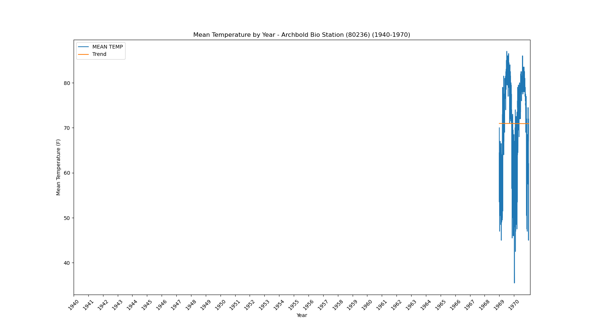</a></div>`)[0];
                popup_c1df63eb1f727bf59a2df4b954c144a7.setContent(html_4fc8e6c110e8afb86b31884b8bb30b7c);
            
        

        marker_b1db9d5ae260a6d443a757e21d0a1b40.bindPopup(popup_c1df63eb1f727bf59a2df4b954c144a7)
        ;

        
    
    
            var marker_3216d2d81d0ec9366a5f7287b61e66de = L.marker(
                [27.59, -81.53],
                {}
            ).addTo(map_d27828e8ee3b01b4d6c76cfca5fbf2bd);
        
    
            var icon_e84dd32a85b41e369ef504d9a0f3c662 = L.AwesomeMarkers.icon(
                {"extraClasses": "fa-rotate-0", "icon": "info-sign", "iconColor": "white", "markerColor": "blue", "prefix": "glyphicon"}
            );
            marker_3216d2d81d0ec9366a5f7287b61e66de.setIcon(icon_e84dd32a85b41e369ef504d9a0f3c662);
        
    
        var popup_2a29f94f24ab8f7bf090b8da015a8f60 = L.popup({"maxWidth": 1000, "minWidth": 500});

        
            
                var html_bf9498b308aeace5cca29596d146a76b = $(`<div id="html_bf9498b308aeace5cca29596d146a76b" style="width: 100.0%; height: 100.0%;"><b>Avon Park 2 W (80369)</b><br>lat: 27.59, lon: -81.53<br><a href='../../static/img/plots/timeseries/meantemp_daily/80369_1940-1970.png' target='_BLANK'></a></div>`)[0];
                popup_2a29f94f24ab8f7bf090b8da015a8f60.setContent(html_bf9498b308aeace5cca29596d146a76b);
            
        

        marker_3216d2d81d0ec9366a5f7287b61e66de.bindPopup(popup_2a29f94f24ab8f7bf090b8da015a8f60)
        ;

        
    
    
            var marker_5c95ff394a8f1c0de0f574a91764fea1 = L.marker(
                [27.95, -81.79],
                {}
            ).addTo(map_d27828e8ee3b01b4d6c76cfca5fbf2bd);
        
    
            var icon_b8bc0f0e4216f1e0af9c7bf38b53ec87 = L.AwesomeMarkers.icon(
                {"extraClasses": "fa-rotate-0", "icon": "info-sign", "iconColor": "white", "markerColor": "blue", "prefix": "glyphicon"}
            );
            marker_5c95ff394a8f1c0de0f574a91764fea1.setIcon(icon_b8bc0f0e4216f1e0af9c7bf38b53ec87);
        
    
        var popup_b1afd7359a7a037bee901c09f2619883 = L.popup({"maxWidth": 1000, "minWidth": 500});

        
            
                var html_aef3100e62f6db30523269161e7a3253 = $(`<div id="html_aef3100e62f6db30523269161e7a3253" style="width: 100.0%; height: 100.0%;"><b>Bartow (80478)</b><br>lat: 27.95, lon: -81.79<br><a href='../../static/img/plots/timeseries/meantemp_daily/80478_1940-1970.png' target='_BLANK'></a></div>`)[0];
                popup_b1afd7359a7a037bee901c09f2619883.setContent(html_aef3100e62f6db30523269161e7a3253);
            
        

        marker_5c95ff394a8f1c0de0f574a91764fea1.bindPopup(popup_b1afd7359a7a037bee901c09f2619883)
        ;

        
    
    
            var marker_039e024205df90cc1654d770877bd98d = L.marker(
                [26.7, -80.66],
                {}
            ).addTo(map_d27828e8ee3b01b4d6c76cfca5fbf2bd);
        
    
            var icon_639578444996e9a0c95444a12c834885 = L.AwesomeMarkers.icon(
                {"extraClasses": "fa-rotate-0", "icon": "info-sign", "iconColor": "white", "markerColor": "blue", "prefix": "glyphicon"}
            );
            marker_039e024205df90cc1654d770877bd98d.setIcon(icon_639578444996e9a0c95444a12c834885);
        
    
        var popup_579eed4c9a1a06b463923587fabcc7d3 = L.popup({"maxWidth": 1000, "minWidth": 500});

        
            
                var html_0c22d5855fc75cd229ac1fec3ed29449 = $(`<div id="html_0c22d5855fc75cd229ac1fec3ed29449" style="width: 100.0%; height: 100.0%;"><b>Belle Glade Airport (80611)</b><br>lat: 26.7, lon: -80.66<br><a href='../../static/img/plots/timeseries/meantemp_daily/80611_1940-1970.png' target='_BLANK'></a></div>`)[0];
                popup_579eed4c9a1a06b463923587fabcc7d3.setContent(html_0c22d5855fc75cd229ac1fec3ed29449);
            
        

        marker_039e024205df90cc1654d770877bd98d.bindPopup(popup_579eed4c9a1a06b463923587fabcc7d3)
        ;

        
    
    
            var marker_83a17df478cf245b484ad6f2fd7db19b = L.marker(
                [27.5, -82.57],
                {}
            ).addTo(map_d27828e8ee3b01b4d6c76cfca5fbf2bd);
        
    
            var icon_13c9a0ae70e613339bc64736c7867495 = L.AwesomeMarkers.icon(
                {"extraClasses": "fa-rotate-0", "icon": "info-sign", "iconColor": "white", "markerColor": "orange", "prefix": "glyphicon"}
            );
            marker_83a17df478cf245b484ad6f2fd7db19b.setIcon(icon_13c9a0ae70e613339bc64736c7867495);
        
    
        var popup_81a4f37dd9d82d4c8bf86d1209808d9d = L.popup({"maxWidth": 1000, "minWidth": 500});

        
            
                var html_a285254e680bd21074156da4658dc4f7 = $(`<div id="html_a285254e680bd21074156da4658dc4f7" style="width: 100.0%; height: 100.0%;"><b>Bradenton 5 ESE (80945)</b><br>lat: 27.5, lon: -82.57<br><a href='../../static/img/plots/timeseries/meantemp_daily/80945_1940-1970.png' target='_BLANK'>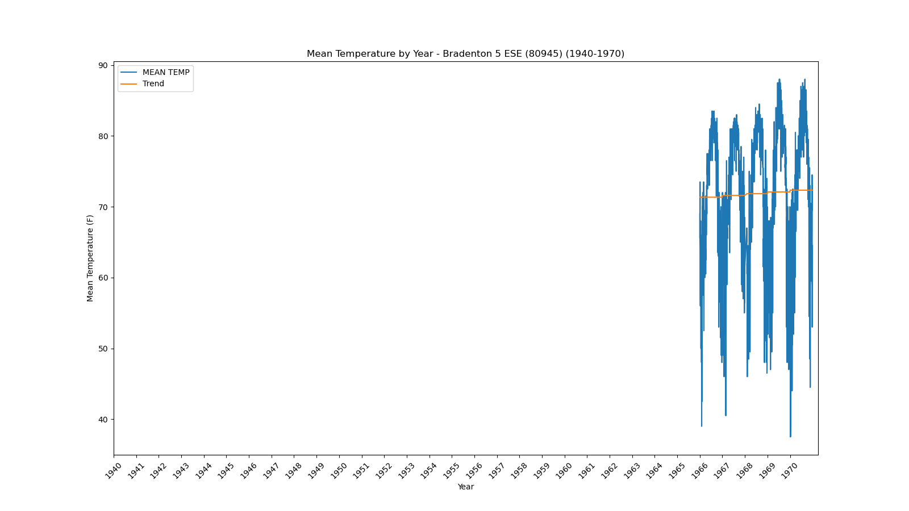</a></div>`)[0];
                popup_81a4f37dd9d82d4c8bf86d1209808d9d.setContent(html_a285254e680bd21074156da4658dc4f7);
            
        

        marker_83a17df478cf245b484ad6f2fd7db19b.bindPopup(popup_81a4f37dd9d82d4c8bf86d1209808d9d)
        ;

        
    
    
            var marker_3b12cd12e4a8a05301a7f5ce8a0e8532 = L.marker(
                [28.62, -82.37],
                {}
            ).addTo(map_d27828e8ee3b01b4d6c76cfca5fbf2bd);
        
    
            var icon_9c59a595eaa55e889dbfaf4e5f17a665 = L.AwesomeMarkers.icon(
                {"extraClasses": "fa-rotate-0", "icon": "info-sign", "iconColor": "white", "markerColor": "blue", "prefix": "glyphicon"}
            );
            marker_3b12cd12e4a8a05301a7f5ce8a0e8532.setIcon(icon_9c59a595eaa55e889dbfaf4e5f17a665);
        
    
        var popup_59c81d026b4c76c17a525c516d130d5f = L.popup({"maxWidth": 1000, "minWidth": 500});

        
            
                var html_d93361c0ad90fc151129d2adf72f5394 = $(`<div id="html_d93361c0ad90fc151129d2adf72f5394" style="width: 100.0%; height: 100.0%;"><b>Chinsegut Hill (81046)</b><br>lat: 28.62, lon: -82.37<br><a href='../../static/img/plots/timeseries/meantemp_daily/81046_1940-1970.png' target='_BLANK'></a></div>`)[0];
                popup_59c81d026b4c76c17a525c516d130d5f.setContent(html_d93361c0ad90fc151129d2adf72f5394);
            
        

        marker_3b12cd12e4a8a05301a7f5ce8a0e8532.bindPopup(popup_59c81d026b4c76c17a525c516d130d5f)
        ;

        
    
    
            var marker_416e23890839421233b46d619c545c1e = L.marker(
                [28.66, -82.11],
                {}
            ).addTo(map_d27828e8ee3b01b4d6c76cfca5fbf2bd);
        
    
            var icon_93c79375ebcfee739fd422c6be5db791 = L.AwesomeMarkers.icon(
                {"extraClasses": "fa-rotate-0", "icon": "info-sign", "iconColor": "white", "markerColor": "blue", "prefix": "glyphicon"}
            );
            marker_416e23890839421233b46d619c545c1e.setIcon(icon_93c79375ebcfee739fd422c6be5db791);
        
    
        var popup_7c57f6b226e49ef8e353f0bc90005cb3 = L.popup({"maxWidth": 1000, "minWidth": 500});

        
            
                var html_c9f0072e14e4817c39018db4a2332dec = $(`<div id="html_c9f0072e14e4817c39018db4a2332dec" style="width: 100.0%; height: 100.0%;"><b>Bushnell 1 E (81163)</b><br>lat: 28.66, lon: -82.11<br><a href='../../static/img/plots/timeseries/meantemp_daily/81163_1940-1970.png' target='_BLANK'></a></div>`)[0];
                popup_7c57f6b226e49ef8e353f0bc90005cb3.setContent(html_c9f0072e14e4817c39018db4a2332dec);
            
        

        marker_416e23890839421233b46d619c545c1e.bindPopup(popup_7c57f6b226e49ef8e353f0bc90005cb3)
        ;

        
    
    
            var marker_cb4c72e5bb633e3e2493d3a0ef592bcb = L.marker(
                [26.86, -80.63],
                {}
            ).addTo(map_d27828e8ee3b01b4d6c76cfca5fbf2bd);
        
    
            var icon_8cb6069df728106f81d6252590b314f1 = L.AwesomeMarkers.icon(
                {"extraClasses": "fa-rotate-0", "icon": "info-sign", "iconColor": "white", "markerColor": "blue", "prefix": "glyphicon"}
            );
            marker_cb4c72e5bb633e3e2493d3a0ef592bcb.setIcon(icon_8cb6069df728106f81d6252590b314f1);
        
    
        var popup_96d4040c1241700ad63156bf99499d63 = L.popup({"maxWidth": 1000, "minWidth": 500});

        
            
                var html_27af535d475e9f0caf16cecc7bd6d64b = $(`<div id="html_27af535d475e9f0caf16cecc7bd6d64b" style="width: 100.0%; height: 100.0%;"><b>Canal Point (81276)</b><br>lat: 26.86, lon: -80.63<br><a href='../../static/img/plots/timeseries/meantemp_daily/81276_1940-1970.png' target='_BLANK'></a></div>`)[0];
                popup_96d4040c1241700ad63156bf99499d63.setContent(html_27af535d475e9f0caf16cecc7bd6d64b);
            
        

        marker_cb4c72e5bb633e3e2493d3a0ef592bcb.bindPopup(popup_96d4040c1241700ad63156bf99499d63)
        ;

        
    
    
            var marker_4e55265c1209ded640cd04de94b749a9 = L.marker(
                [30.78, -85.54],
                {}
            ).addTo(map_d27828e8ee3b01b4d6c76cfca5fbf2bd);
        
    
            var icon_ee5054bfe87901025e7c8b44b699175e = L.AwesomeMarkers.icon(
                {"extraClasses": "fa-rotate-0", "icon": "info-sign", "iconColor": "white", "markerColor": "blue", "prefix": "glyphicon"}
            );
            marker_4e55265c1209ded640cd04de94b749a9.setIcon(icon_ee5054bfe87901025e7c8b44b699175e);
        
    
        var popup_76a7111f62e7c3a4e92d1a4c34044e86 = L.popup({"maxWidth": 1000, "minWidth": 500});

        
            
                var html_507e958de7b5506c9853ba32dbe36a4c = $(`<div id="html_507e958de7b5506c9853ba32dbe36a4c" style="width: 100.0%; height: 100.0%;"><b>Chipley (81544)</b><br>lat: 30.78, lon: -85.54<br><a href='../../static/img/plots/timeseries/meantemp_daily/81544_1940-1970.png' target='_BLANK'></a></div>`)[0];
                popup_76a7111f62e7c3a4e92d1a4c34044e86.setContent(html_507e958de7b5506c9853ba32dbe36a4c);
            
        

        marker_4e55265c1209ded640cd04de94b749a9.bindPopup(popup_76a7111f62e7c3a4e92d1a4c34044e86)
        ;

        
    
    
            var marker_a2e1b2295690037a854f2f63a9f96aac = L.marker(
                [28.56, -81.77],
                {}
            ).addTo(map_d27828e8ee3b01b4d6c76cfca5fbf2bd);
        
    
            var icon_f35c7d3170a092bbd756986f73bb7369 = L.AwesomeMarkers.icon(
                {"extraClasses": "fa-rotate-0", "icon": "info-sign", "iconColor": "white", "markerColor": "blue", "prefix": "glyphicon"}
            );
            marker_a2e1b2295690037a854f2f63a9f96aac.setIcon(icon_f35c7d3170a092bbd756986f73bb7369);
        
    
        var popup_9e727a3a267e9568bdf978fcb831b9d8 = L.popup({"maxWidth": 1000, "minWidth": 500});

        
            
                var html_fe5daf138c5c0a3d0c8fd541967f6d85 = $(`<div id="html_fe5daf138c5c0a3d0c8fd541967f6d85" style="width: 100.0%; height: 100.0%;"><b>Clermont 9 S (81641)</b><br>lat: 28.56, lon: -81.77<br><a href='../../static/img/plots/timeseries/meantemp_daily/81641_1940-1970.png' target='_BLANK'></a></div>`)[0];
                popup_9e727a3a267e9568bdf978fcb831b9d8.setContent(html_fe5daf138c5c0a3d0c8fd541967f6d85);
            
        

        marker_a2e1b2295690037a854f2f63a9f96aac.bindPopup(popup_9e727a3a267e9568bdf978fcb831b9d8)
        ;

        
    
    
            var marker_12ce4755c50544404c599370ad837e42 = L.marker(
                [29.43, -81.51],
                {}
            ).addTo(map_d27828e8ee3b01b4d6c76cfca5fbf2bd);
        
    
            var icon_4eeb1922ddf878bf3c8898012fb93f40 = L.AwesomeMarkers.icon(
                {"extraClasses": "fa-rotate-0", "icon": "info-sign", "iconColor": "white", "markerColor": "orange", "prefix": "glyphicon"}
            );
            marker_12ce4755c50544404c599370ad837e42.setIcon(icon_4eeb1922ddf878bf3c8898012fb93f40);
        
    
        var popup_3ffa94bea7c65524944e6cace996fcba = L.popup({"maxWidth": 1000, "minWidth": 500});

        
            
                var html_3d3ff7d6b3cabbd53f418d52501f063e = $(`<div id="html_3d3ff7d6b3cabbd53f418d52501f063e" style="width: 100.0%; height: 100.0%;"><b>Crescent City (81978)</b><br>lat: 29.43, lon: -81.51<br><a href='../../static/img/plots/timeseries/meantemp_daily/81978_1940-1970.png' target='_BLANK'></a></div>`)[0];
                popup_3ffa94bea7c65524944e6cace996fcba.setContent(html_3d3ff7d6b3cabbd53f418d52501f063e);
            
        

        marker_12ce4755c50544404c599370ad837e42.bindPopup(popup_3ffa94bea7c65524944e6cace996fcba)
        ;

        
    
    
            var marker_85689628685a8b106eb841fae66ffb6d = L.marker(
                [30.78, -86.52],
                {}
            ).addTo(map_d27828e8ee3b01b4d6c76cfca5fbf2bd);
        
    
            var icon_abca31932fbb77fa9af4a8731527010f = L.AwesomeMarkers.icon(
                {"extraClasses": "fa-rotate-0", "icon": "info-sign", "iconColor": "white", "markerColor": "blue", "prefix": "glyphicon"}
            );
            marker_85689628685a8b106eb841fae66ffb6d.setIcon(icon_abca31932fbb77fa9af4a8731527010f);
        
    
        var popup_ab57f78ffc70114a501bf808539ce284 = L.popup({"maxWidth": 1000, "minWidth": 500});

        
            
                var html_5d5dde6404b30e066b9cece814e8f6b1 = $(`<div id="html_5d5dde6404b30e066b9cece814e8f6b1" style="width: 100.0%; height: 100.0%;"><b>Crestview Bob Sikes Airport (81986)</b><br>lat: 30.78, lon: -86.52<br><a href='../../static/img/plots/timeseries/meantemp_daily/81986_1940-1970.png' target='_BLANK'>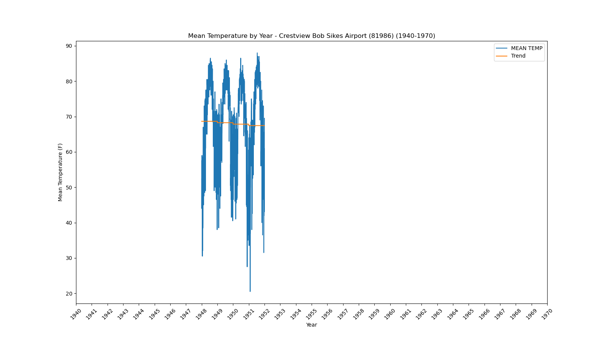</a></div>`)[0];
                popup_ab57f78ffc70114a501bf808539ce284.setContent(html_5d5dde6404b30e066b9cece814e8f6b1);
            
        

        marker_85689628685a8b106eb841fae66ffb6d.bindPopup(popup_ab57f78ffc70114a501bf808539ce284)
        ;

        
    
    
            var marker_02bf6e1cd61e65e03830d4f6eda1356f = L.marker(
                [29.63, -83.13],
                {}
            ).addTo(map_d27828e8ee3b01b4d6c76cfca5fbf2bd);
        
    
            var icon_448cca0820c096b85fe6029b7e4a9a7e = L.AwesomeMarkers.icon(
                {"extraClasses": "fa-rotate-0", "icon": "info-sign", "iconColor": "white", "markerColor": "blue", "prefix": "glyphicon"}
            );
            marker_02bf6e1cd61e65e03830d4f6eda1356f.setIcon(icon_448cca0820c096b85fe6029b7e4a9a7e);
        
    
        var popup_cab3eb5ab8e56954d57dde9630953d8b = L.popup({"maxWidth": 1000, "minWidth": 500});

        
            
                var html_9e49b522ac4530784c2cb400f7947c60 = $(`<div id="html_9e49b522ac4530784c2cb400f7947c60" style="width: 100.0%; height: 100.0%;"><b>Cross City 1 E (82008)</b><br>lat: 29.63, lon: -83.13<br><a href='../../static/img/plots/timeseries/meantemp_daily/82008_1940-1970.png' target='_BLANK'></a></div>`)[0];
                popup_cab3eb5ab8e56954d57dde9630953d8b.setContent(html_9e49b522ac4530784c2cb400f7947c60);
            
        

        marker_02bf6e1cd61e65e03830d4f6eda1356f.bindPopup(popup_cab3eb5ab8e56954d57dde9630953d8b)
        ;

        
    
    
            var marker_53dc14881e4d4362d1971120e24b482b = L.marker(
                [29.16, -81.0],
                {}
            ).addTo(map_d27828e8ee3b01b4d6c76cfca5fbf2bd);
        
    
            var icon_ec8d07aec8b1bc26d279d7556153b261 = L.AwesomeMarkers.icon(
                {"extraClasses": "fa-rotate-0", "icon": "info-sign", "iconColor": "white", "markerColor": "orange", "prefix": "glyphicon"}
            );
            marker_53dc14881e4d4362d1971120e24b482b.setIcon(icon_ec8d07aec8b1bc26d279d7556153b261);
        
    
        var popup_06b04eef2c46a2ffcaf7c45875d1de11 = L.popup({"maxWidth": 1000, "minWidth": 500});

        
            
                var html_aa5db9ff93d9338c97fb7b8e0df48b28 = $(`<div id="html_aa5db9ff93d9338c97fb7b8e0df48b28" style="width: 100.0%; height: 100.0%;"><b>Daytona Beach (82150)</b><br>lat: 29.16, lon: -81<br><a href='../../static/img/plots/timeseries/meantemp_daily/82150_1940-1970.png' target='_BLANK'></a></div>`)[0];
                popup_06b04eef2c46a2ffcaf7c45875d1de11.setContent(html_aa5db9ff93d9338c97fb7b8e0df48b28);
            
        

        marker_53dc14881e4d4362d1971120e24b482b.bindPopup(popup_06b04eef2c46a2ffcaf7c45875d1de11)
        ;

        
    
    
            var marker_4850f0e584bf031c893ff75bb89e9cfc = L.marker(
                [29.18, -81.06],
                {}
            ).addTo(map_d27828e8ee3b01b4d6c76cfca5fbf2bd);
        
    
            var icon_1f952fe619304c4def5624418f499ff3 = L.AwesomeMarkers.icon(
                {"extraClasses": "fa-rotate-0", "icon": "info-sign", "iconColor": "white", "markerColor": "blue", "prefix": "glyphicon"}
            );
            marker_4850f0e584bf031c893ff75bb89e9cfc.setIcon(icon_1f952fe619304c4def5624418f499ff3);
        
    
        var popup_ff45d5eb8bcda3d2de701a0701aca682 = L.popup({"maxWidth": 1000, "minWidth": 500});

        
            
                var html_04336efdb98fd3e06e1dbb9e486ad2d9 = $(`<div id="html_04336efdb98fd3e06e1dbb9e486ad2d9" style="width: 100.0%; height: 100.0%;"><b>Daytona Beach Intl Airport (82158)</b><br>lat: 29.18, lon: -81.06<br><a href='../../static/img/plots/timeseries/meantemp_daily/82158_1940-1970.png' target='_BLANK'>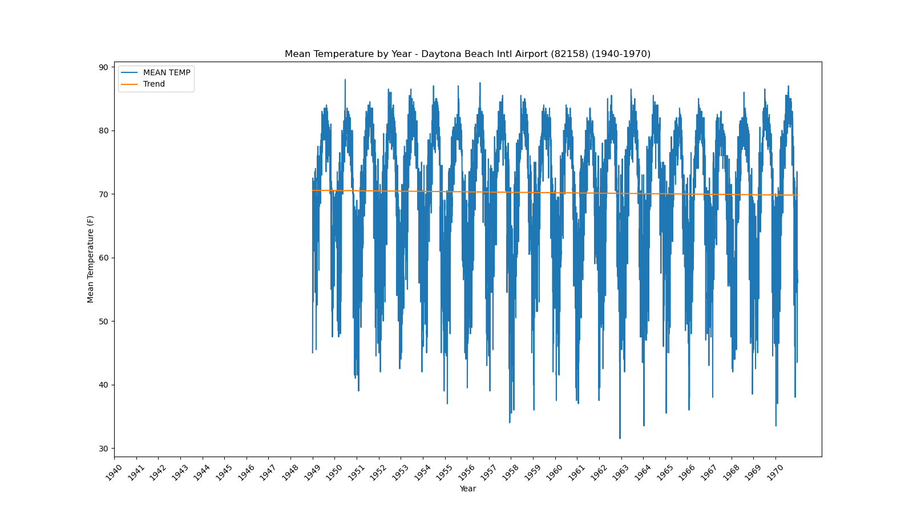</a></div>`)[0];
                popup_ff45d5eb8bcda3d2de701a0701aca682.setContent(html_04336efdb98fd3e06e1dbb9e486ad2d9);
            
        

        marker_4850f0e584bf031c893ff75bb89e9cfc.bindPopup(popup_ff45d5eb8bcda3d2de701a0701aca682)
        ;

        
    
    
            var marker_4fae3506ac829169b2a66e96bf0ae844 = L.marker(
                [30.72, -86.12],
                {}
            ).addTo(map_d27828e8ee3b01b4d6c76cfca5fbf2bd);
        
    
            var icon_7fcc8abb7a0952384cd8a58eff192b5b = L.AwesomeMarkers.icon(
                {"extraClasses": "fa-rotate-0", "icon": "info-sign", "iconColor": "white", "markerColor": "blue", "prefix": "glyphicon"}
            );
            marker_4fae3506ac829169b2a66e96bf0ae844.setIcon(icon_7fcc8abb7a0952384cd8a58eff192b5b);
        
    
        var popup_6851b153787ec3362df53c7d4001c9a9 = L.popup({"maxWidth": 1000, "minWidth": 500});

        
            
                var html_a47ef044c2eb87768246faabd5305652 = $(`<div id="html_a47ef044c2eb87768246faabd5305652" style="width: 100.0%; height: 100.0%;"><b>De Funiak Springs 1 E (82220)</b><br>lat: 30.72, lon: -86.12<br><a href='../../static/img/plots/timeseries/meantemp_daily/82220_1940-1970.png' target='_BLANK'></a></div>`)[0];
                popup_6851b153787ec3362df53c7d4001c9a9.setContent(html_a47ef044c2eb87768246faabd5305652);
            
        

        marker_4fae3506ac829169b2a66e96bf0ae844.bindPopup(popup_6851b153787ec3362df53c7d4001c9a9)
        ;

        
    
    
            var marker_449b65839d864cfc8909c200aa59d033 = L.marker(
                [29.03, -81.3],
                {}
            ).addTo(map_d27828e8ee3b01b4d6c76cfca5fbf2bd);
        
    
            var icon_78e71136f1365abe0d0b651027137b95 = L.AwesomeMarkers.icon(
                {"extraClasses": "fa-rotate-0", "icon": "info-sign", "iconColor": "white", "markerColor": "blue", "prefix": "glyphicon"}
            );
            marker_449b65839d864cfc8909c200aa59d033.setIcon(icon_78e71136f1365abe0d0b651027137b95);
        
    
        var popup_44880b7f15e0aae8a5b7e5b77e535076 = L.popup({"maxWidth": 1000, "minWidth": 500});

        
            
                var html_3e4d5bd8f0ee4d7be395c1c4a4cf68a6 = $(`<div id="html_3e4d5bd8f0ee4d7be395c1c4a4cf68a6" style="width: 100.0%; height: 100.0%;"><b>Deland 1 SSE (82229)</b><br>lat: 29.03, lon: -81.3<br><a href='../../static/img/plots/timeseries/meantemp_daily/82229_1940-1970.png' target='_BLANK'></a></div>`)[0];
                popup_44880b7f15e0aae8a5b7e5b77e535076.setContent(html_3e4d5bd8f0ee4d7be395c1c4a4cf68a6);
            
        

        marker_449b65839d864cfc8909c200aa59d033.bindPopup(popup_44880b7f15e0aae8a5b7e5b77e535076)
        ;

        
    
    
            var marker_63fcbfcfad74dccf59147c2a85b0f82b = L.marker(
                [30.71, -85.72],
                {}
            ).addTo(map_d27828e8ee3b01b4d6c76cfca5fbf2bd);
        
    
            var icon_5b2eb3c7ceefc8c7b36e3c70d5998ec5 = L.AwesomeMarkers.icon(
                {"extraClasses": "fa-rotate-0", "icon": "info-sign", "iconColor": "white", "markerColor": "blue", "prefix": "glyphicon"}
            );
            marker_63fcbfcfad74dccf59147c2a85b0f82b.setIcon(icon_5b2eb3c7ceefc8c7b36e3c70d5998ec5);
        
    
        var popup_97fdb5c0f5c5c8912a966622d954d1ff = L.popup({"maxWidth": 1000, "minWidth": 500});

        
            
                var html_44072af6b2d019f25814aca2aa6a7e52 = $(`<div id="html_44072af6b2d019f25814aca2aa6a7e52" style="width: 100.0%; height: 100.0%;"><b>Devils Garden (82298)</b><br>lat: 30.71, lon: -85.72<br><a href='../../static/img/plots/timeseries/meantemp_daily/82298_1940-1970.png' target='_BLANK'>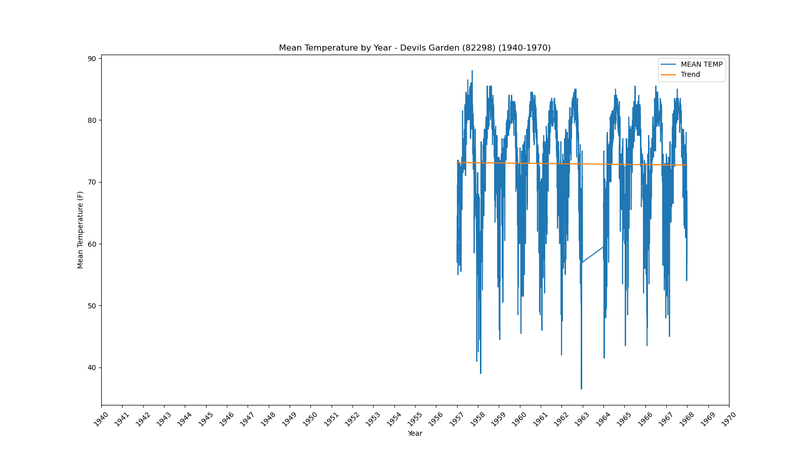</a></div>`)[0];
                popup_97fdb5c0f5c5c8912a966622d954d1ff.setContent(html_44072af6b2d019f25814aca2aa6a7e52);
            
        

        marker_63fcbfcfad74dccf59147c2a85b0f82b.bindPopup(popup_97fdb5c0f5c5c8912a966622d954d1ff)
        ;

        
    
    
            var marker_379b61bb842daf5e6602709dc397f46b = L.marker(
                [25.29, -80.89],
                {}
            ).addTo(map_d27828e8ee3b01b4d6c76cfca5fbf2bd);
        
    
            var icon_9ced7e38ae41afef6d4299c043bd15f2 = L.AwesomeMarkers.icon(
                {"extraClasses": "fa-rotate-0", "icon": "info-sign", "iconColor": "white", "markerColor": "blue", "prefix": "glyphicon"}
            );
            marker_379b61bb842daf5e6602709dc397f46b.setIcon(icon_9ced7e38ae41afef6d4299c043bd15f2);
        
    
        var popup_1fa7f5d77e563418e85a9259d5e5324a = L.popup({"maxWidth": 1000, "minWidth": 500});

        
            
                var html_771c951d40f2347166a3c491682317c3 = $(`<div id="html_771c951d40f2347166a3c491682317c3" style="width: 100.0%; height: 100.0%;"><b>Everglades (82850)</b><br>lat: 25.29, lon: -80.89<br><a href='../../static/img/plots/timeseries/meantemp_daily/82850_1940-1970.png' target='_BLANK'>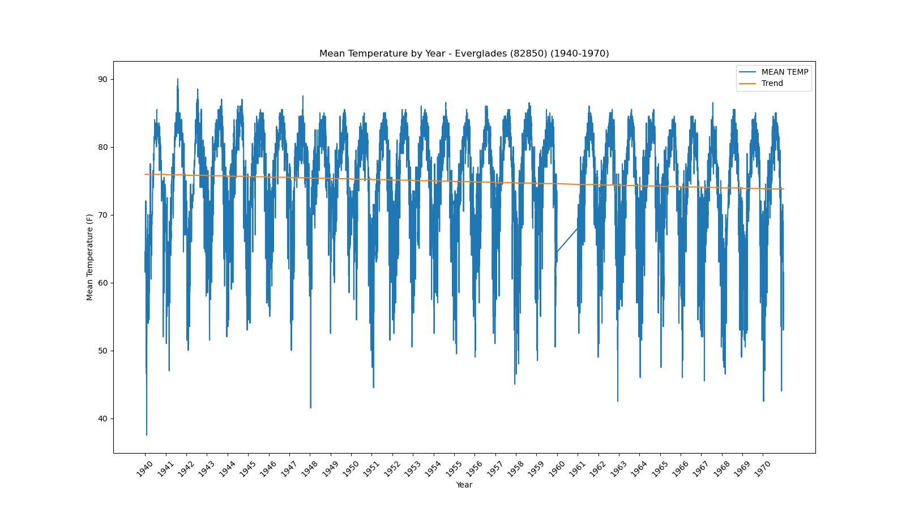</a></div>`)[0];
                popup_1fa7f5d77e563418e85a9259d5e5324a.setContent(html_771c951d40f2347166a3c491682317c3);
            
        

        marker_379b61bb842daf5e6602709dc397f46b.bindPopup(popup_1fa7f5d77e563418e85a9259d5e5324a)
        ;

        
    
    
            var marker_15db6c65c542ecc1e6dc3ad922d55256 = L.marker(
                [29.75, -81.54],
                {}
            ).addTo(map_d27828e8ee3b01b4d6c76cfca5fbf2bd);
        
    
            var icon_c761f0db7bb975b1c82f9991376c7809 = L.AwesomeMarkers.icon(
                {"extraClasses": "fa-rotate-0", "icon": "info-sign", "iconColor": "white", "markerColor": "blue", "prefix": "glyphicon"}
            );
            marker_15db6c65c542ecc1e6dc3ad922d55256.setIcon(icon_c761f0db7bb975b1c82f9991376c7809);
        
    
        var popup_92bdc95f0e756e5cebc49e87ab5533fd = L.popup({"maxWidth": 1000, "minWidth": 500});

        
            
                var html_234d9027403d29c9322fa0c31686cc2e = $(`<div id="html_234d9027403d29c9322fa0c31686cc2e" style="width: 100.0%; height: 100.0%;"><b>Federal Point (82915)</b><br>lat: 29.75, lon: -81.54<br><a href='../../static/img/plots/timeseries/meantemp_daily/82915_1940-1970.png' target='_BLANK'></a></div>`)[0];
                popup_92bdc95f0e756e5cebc49e87ab5533fd.setContent(html_234d9027403d29c9322fa0c31686cc2e);
            
        

        marker_15db6c65c542ecc1e6dc3ad922d55256.bindPopup(popup_92bdc95f0e756e5cebc49e87ab5533fd)
        ;

        
    
    
            var marker_2cd14dd801c5a70a25599a250e870e99 = L.marker(
                [30.62, -81.46],
                {}
            ).addTo(map_d27828e8ee3b01b4d6c76cfca5fbf2bd);
        
    
            var icon_507a2ad3f35ce3a53674b611a19172ed = L.AwesomeMarkers.icon(
                {"extraClasses": "fa-rotate-0", "icon": "info-sign", "iconColor": "white", "markerColor": "blue", "prefix": "glyphicon"}
            );
            marker_2cd14dd801c5a70a25599a250e870e99.setIcon(icon_507a2ad3f35ce3a53674b611a19172ed);
        
    
        var popup_f3c462b9c0a949167da4bdc890e25ff8 = L.popup({"maxWidth": 1000, "minWidth": 500});

        
            
                var html_74bd5a40f8e5bbf6e20eed041b822bd2 = $(`<div id="html_74bd5a40f8e5bbf6e20eed041b822bd2" style="width: 100.0%; height: 100.0%;"><b>Fernandina Beach (82944)</b><br>lat: 30.62, lon: -81.46<br><a href='../../static/img/plots/timeseries/meantemp_daily/82944_1940-1970.png' target='_BLANK'></a></div>`)[0];
                popup_f3c462b9c0a949167da4bdc890e25ff8.setContent(html_74bd5a40f8e5bbf6e20eed041b822bd2);
            
        

        marker_2cd14dd801c5a70a25599a250e870e99.bindPopup(popup_f3c462b9c0a949167da4bdc890e25ff8)
        ;

        
    
    
            var marker_cceb2c78e7a25feae4450b082aed8636 = L.marker(
                [25.14, -80.93],
                {}
            ).addTo(map_d27828e8ee3b01b4d6c76cfca5fbf2bd);
        
    
            var icon_d104abd1cd3299243eecfa83e4a312a3 = L.AwesomeMarkers.icon(
                {"extraClasses": "fa-rotate-0", "icon": "info-sign", "iconColor": "white", "markerColor": "blue", "prefix": "glyphicon"}
            );
            marker_cceb2c78e7a25feae4450b082aed8636.setIcon(icon_d104abd1cd3299243eecfa83e4a312a3);
        
    
        var popup_9290154d838141afc84ac06852f8dbb7 = L.popup({"maxWidth": 1000, "minWidth": 500});

        
            
                var html_5d5668612fd436e7fa65ecd0005348ab = $(`<div id="html_5d5668612fd436e7fa65ecd0005348ab" style="width: 100.0%; height: 100.0%;"><b>Flamingo Ranger Station (83020)</b><br>lat: 25.14, lon: -80.93<br><a href='../../static/img/plots/timeseries/meantemp_daily/83020_1940-1970.png' target='_BLANK'></a></div>`)[0];
                popup_9290154d838141afc84ac06852f8dbb7.setContent(html_5d5668612fd436e7fa65ecd0005348ab);
            
        

        marker_cceb2c78e7a25feae4450b082aed8636.bindPopup(popup_9290154d838141afc84ac06852f8dbb7)
        ;

        
    
    
            var marker_b59639630988d18aa5baf67b15e36456 = L.marker(
                [27.53, -80.81],
                {}
            ).addTo(map_d27828e8ee3b01b4d6c76cfca5fbf2bd);
        
    
            var icon_d7dd6504c8f0b0d08edc0ac57ad2135e = L.AwesomeMarkers.icon(
                {"extraClasses": "fa-rotate-0", "icon": "info-sign", "iconColor": "white", "markerColor": "blue", "prefix": "glyphicon"}
            );
            marker_b59639630988d18aa5baf67b15e36456.setIcon(icon_d7dd6504c8f0b0d08edc0ac57ad2135e);
        
    
        var popup_2f8b472855f353868c3d99f448838318 = L.popup({"maxWidth": 1000, "minWidth": 500});

        
            
                var html_74224ae3d43deb5969760e3f352c0496 = $(`<div id="html_74224ae3d43deb5969760e3f352c0496" style="width: 100.0%; height: 100.0%;"><b>Fort Drum (83137)</b><br>lat: 27.53, lon: -80.81<br><a href='../../static/img/plots/timeseries/meantemp_daily/83137_1940-1970.png' target='_BLANK'></a></div>`)[0];
                popup_2f8b472855f353868c3d99f448838318.setContent(html_74224ae3d43deb5969760e3f352c0496);
            
        

        marker_b59639630988d18aa5baf67b15e36456.bindPopup(popup_2f8b472855f353868c3d99f448838318)
        ;

        
    
    
            var marker_2ea573ae92a46ac35f752cac8cbd5595 = L.marker(
                [26.07, -80.15],
                {}
            ).addTo(map_d27828e8ee3b01b4d6c76cfca5fbf2bd);
        
    
            var icon_9d714b57b87a14467bb1d0fcfc73de9a = L.AwesomeMarkers.icon(
                {"extraClasses": "fa-rotate-0", "icon": "info-sign", "iconColor": "white", "markerColor": "blue", "prefix": "glyphicon"}
            );
            marker_2ea573ae92a46ac35f752cac8cbd5595.setIcon(icon_9d714b57b87a14467bb1d0fcfc73de9a);
        
    
        var popup_7f18b071e506c233619f947d6a9de50a = L.popup({"maxWidth": 1000, "minWidth": 500});

        
            
                var html_8684bf8930dfc0ffb455e7c266f35ce9 = $(`<div id="html_8684bf8930dfc0ffb455e7c266f35ce9" style="width: 100.0%; height: 100.0%;"><b>Ft Lauderdale (83163)</b><br>lat: 26.07, lon: -80.15<br><a href='../../static/img/plots/timeseries/meantemp_daily/83163_1940-1970.png' target='_BLANK'></a></div>`)[0];
                popup_7f18b071e506c233619f947d6a9de50a.setContent(html_8684bf8930dfc0ffb455e7c266f35ce9);
            
        

        marker_2ea573ae92a46ac35f752cac8cbd5595.bindPopup(popup_7f18b071e506c233619f947d6a9de50a)
        ;

        
    
    
            var marker_e1430f4d8ba440bfbb63f8c49d47ce98 = L.marker(
                [26.13, -80.11],
                {}
            ).addTo(map_d27828e8ee3b01b4d6c76cfca5fbf2bd);
        
    
            var icon_27179233a1155b80da014cd2bfb89654 = L.AwesomeMarkers.icon(
                {"extraClasses": "fa-rotate-0", "icon": "info-sign", "iconColor": "white", "markerColor": "orange", "prefix": "glyphicon"}
            );
            marker_e1430f4d8ba440bfbb63f8c49d47ce98.setIcon(icon_27179233a1155b80da014cd2bfb89654);
        
    
        var popup_ec4fc92cbf5ebedb1f60e11bf34b818c = L.popup({"maxWidth": 1000, "minWidth": 500});

        
            
                var html_d34f375bf956ef1252a1b3bee06c7b8a = $(`<div id="html_d34f375bf956ef1252a1b3bee06c7b8a" style="width: 100.0%; height: 100.0%;"><b>Ft Lauderdale Beach (83168)</b><br>lat: 26.13, lon: -80.11<br><a href='../../static/img/plots/timeseries/meantemp_daily/83168_1940-1970.png' target='_BLANK'>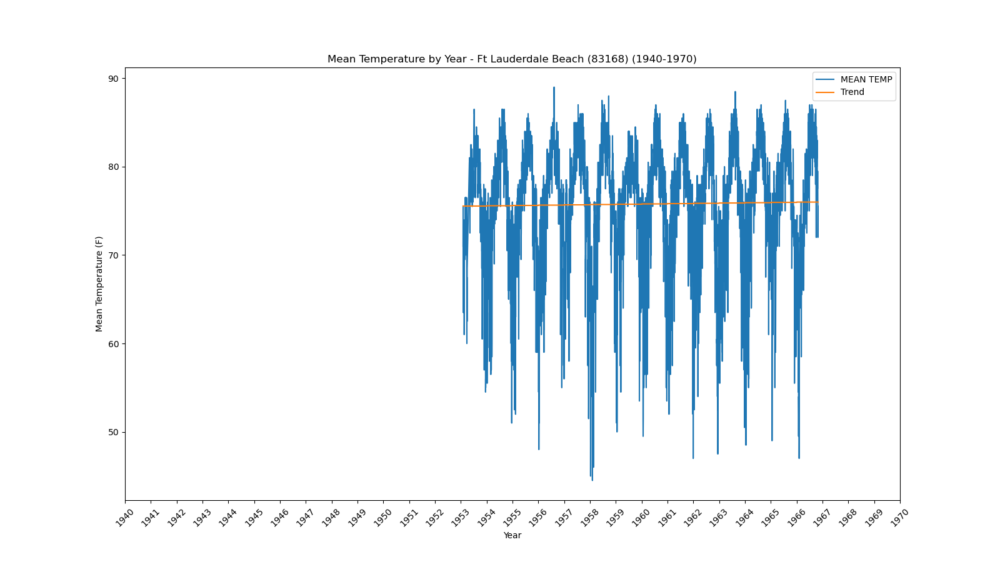</a></div>`)[0];
                popup_ec4fc92cbf5ebedb1f60e11bf34b818c.setContent(html_d34f375bf956ef1252a1b3bee06c7b8a);
            
        

        marker_e1430f4d8ba440bfbb63f8c49d47ce98.bindPopup(popup_ec4fc92cbf5ebedb1f60e11bf34b818c)
        ;

        
    
    
            var marker_ac0006212cbe2e7baf0137b429d60f53 = L.marker(
                [26.59, -81.87],
                {}
            ).addTo(map_d27828e8ee3b01b4d6c76cfca5fbf2bd);
        
    
            var icon_042250e01c32ac4c08b355a70cd6e5bf = L.AwesomeMarkers.icon(
                {"extraClasses": "fa-rotate-0", "icon": "info-sign", "iconColor": "white", "markerColor": "blue", "prefix": "glyphicon"}
            );
            marker_ac0006212cbe2e7baf0137b429d60f53.setIcon(icon_042250e01c32ac4c08b355a70cd6e5bf);
        
    
        var popup_d0d88bb903792f1d2fce44664264a425 = L.popup({"maxWidth": 1000, "minWidth": 500});

        
            
                var html_41e681c7e614b37e37bd40c56caafbf0 = $(`<div id="html_41e681c7e614b37e37bd40c56caafbf0" style="width: 100.0%; height: 100.0%;"><b>Fort Myers Page Field Airport (83186)</b><br>lat: 26.59, lon: -81.87<br><a href='../../static/img/plots/timeseries/meantemp_daily/83186_1940-1970.png' target='_BLANK'>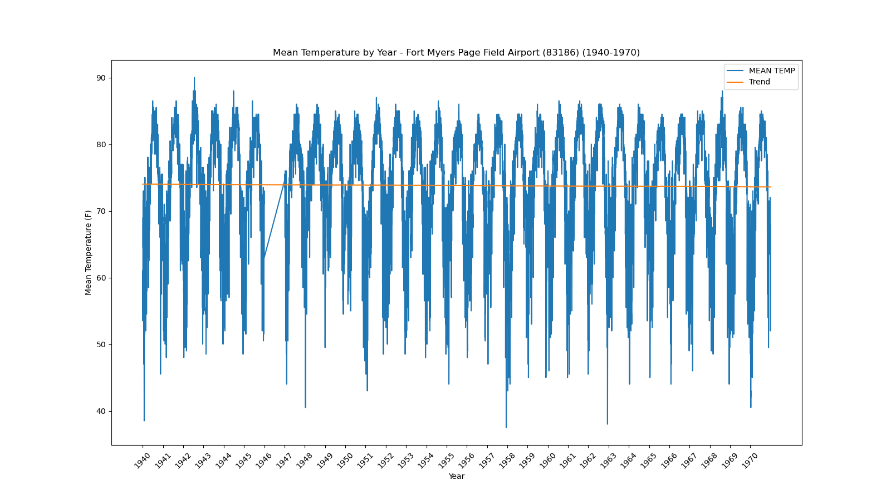</a></div>`)[0];
                popup_d0d88bb903792f1d2fce44664264a425.setContent(html_41e681c7e614b37e37bd40c56caafbf0);
            
        

        marker_ac0006212cbe2e7baf0137b429d60f53.bindPopup(popup_d0d88bb903792f1d2fce44664264a425)
        ;

        
    
    
            var marker_f70b62a0c21f8507dff021081b2fbbb7 = L.marker(
                [27.44, -80.34],
                {}
            ).addTo(map_d27828e8ee3b01b4d6c76cfca5fbf2bd);
        
    
            var icon_28173f7fb0d8737498484b12a4a98adb = L.AwesomeMarkers.icon(
                {"extraClasses": "fa-rotate-0", "icon": "info-sign", "iconColor": "white", "markerColor": "blue", "prefix": "glyphicon"}
            );
            marker_f70b62a0c21f8507dff021081b2fbbb7.setIcon(icon_28173f7fb0d8737498484b12a4a98adb);
        
    
        var popup_a838c45c325363a500f8d1bf616f5e41 = L.popup({"maxWidth": 1000, "minWidth": 500});

        
            
                var html_1c3564978d86b8db53a96618bbff3f6c = $(`<div id="html_1c3564978d86b8db53a96618bbff3f6c" style="width: 100.0%; height: 100.0%;"><b>Fort Pierce (83207)</b><br>lat: 27.44, lon: -80.34<br><a href='../../static/img/plots/timeseries/meantemp_daily/83207_1940-1970.png' target='_BLANK'></a></div>`)[0];
                popup_a838c45c325363a500f8d1bf616f5e41.setContent(html_1c3564978d86b8db53a96618bbff3f6c);
            
        

        marker_f70b62a0c21f8507dff021081b2fbbb7.bindPopup(popup_a838c45c325363a500f8d1bf616f5e41)
        ;

        
    
    
            var marker_1c3b1cffb41eb419f102bf731b203f0d = L.marker(
                [29.69, -82.28],
                {}
            ).addTo(map_d27828e8ee3b01b4d6c76cfca5fbf2bd);
        
    
            var icon_6835b997c0feeb134b79ecf7e0ffb938 = L.AwesomeMarkers.icon(
                {"extraClasses": "fa-rotate-0", "icon": "info-sign", "iconColor": "white", "markerColor": "orange", "prefix": "glyphicon"}
            );
            marker_1c3b1cffb41eb419f102bf731b203f0d.setIcon(icon_6835b997c0feeb134b79ecf7e0ffb938);
        
    
        var popup_79e1a6f29f0189ccc57b596e0ec62828 = L.popup({"maxWidth": 1000, "minWidth": 500});

        
            
                var html_e7c3857afe64fc1d360bb2f2ab1590ea = $(`<div id="html_e7c3857afe64fc1d360bb2f2ab1590ea" style="width: 100.0%; height: 100.0%;"><b>Gainesville Regional Airport (83326)</b><br>lat: 29.69, lon: -82.28<br><a href='../../static/img/plots/timeseries/meantemp_daily/83326_1940-1970.png' target='_BLANK'></a></div>`)[0];
                popup_79e1a6f29f0189ccc57b596e0ec62828.setContent(html_e7c3857afe64fc1d360bb2f2ab1590ea);
            
        

        marker_1c3b1cffb41eb419f102bf731b203f0d.bindPopup(popup_79e1a6f29f0189ccc57b596e0ec62828)
        ;

        
    
    
            var marker_e00358bb5976d1f5667d68eb597f9043 = L.marker(
                [30.28, -82.16],
                {}
            ).addTo(map_d27828e8ee3b01b4d6c76cfca5fbf2bd);
        
    
            var icon_ed26c554fffae55108fc70a0f49ed684 = L.AwesomeMarkers.icon(
                {"extraClasses": "fa-rotate-0", "icon": "info-sign", "iconColor": "white", "markerColor": "blue", "prefix": "glyphicon"}
            );
            marker_e00358bb5976d1f5667d68eb597f9043.setIcon(icon_ed26c554fffae55108fc70a0f49ed684);
        
    
        var popup_528e5e7c516daf7267d4483c43417010 = L.popup({"maxWidth": 1000, "minWidth": 500});

        
            
                var html_dbcc0acc8eb005d95c9a63a03c64b977 = $(`<div id="html_dbcc0acc8eb005d95c9a63a03c64b977" style="width: 100.0%; height: 100.0%;"><b>Glen St Mary 1 W (83470)</b><br>lat: 30.28, lon: -82.16<br><a href='../../static/img/plots/timeseries/meantemp_daily/83470_1940-1970.png' target='_BLANK'></a></div>`)[0];
                popup_528e5e7c516daf7267d4483c43417010.setContent(html_dbcc0acc8eb005d95c9a63a03c64b977);
            
        

        marker_e00358bb5976d1f5667d68eb597f9043.bindPopup(popup_528e5e7c516daf7267d4483c43417010)
        ;

        
    
    
            var marker_adf4691d899cca4160c4547e8d9eaeb6 = L.marker(
                [25.86, -80.28],
                {}
            ).addTo(map_d27828e8ee3b01b4d6c76cfca5fbf2bd);
        
    
            var icon_e106cc282240d61a7e2d861514cf1ab6 = L.AwesomeMarkers.icon(
                {"extraClasses": "fa-rotate-0", "icon": "info-sign", "iconColor": "white", "markerColor": "blue", "prefix": "glyphicon"}
            );
            marker_adf4691d899cca4160c4547e8d9eaeb6.setIcon(icon_e106cc282240d61a7e2d861514cf1ab6);
        
    
        var popup_fa297b4934e704a66fac8d6d6e08d707 = L.popup({"maxWidth": 1000, "minWidth": 500});

        
            
                var html_b5a760f963ab836001c55f77fe01e518 = $(`<div id="html_b5a760f963ab836001c55f77fe01e518" style="width: 100.0%; height: 100.0%;"><b>Hialeah (83909)</b><br>lat: 25.86, lon: -80.28<br><a href='../../static/img/plots/timeseries/meantemp_daily/83909_1940-1970.png' target='_BLANK'></a></div>`)[0];
                popup_fa297b4934e704a66fac8d6d6e08d707.setContent(html_b5a760f963ab836001c55f77fe01e518);
            
        

        marker_adf4691d899cca4160c4547e8d9eaeb6.bindPopup(popup_fa297b4934e704a66fac8d6d6e08d707)
        ;

        
    
    
            var marker_99ac9bde471caee966c40c5da33c6d2e = L.marker(
                [29.83, -82.6],
                {}
            ).addTo(map_d27828e8ee3b01b4d6c76cfca5fbf2bd);
        
    
            var icon_2ed5c30e40b56ee200e511cfb6dec5eb = L.AwesomeMarkers.icon(
                {"extraClasses": "fa-rotate-0", "icon": "info-sign", "iconColor": "white", "markerColor": "blue", "prefix": "glyphicon"}
            );
            marker_99ac9bde471caee966c40c5da33c6d2e.setIcon(icon_2ed5c30e40b56ee200e511cfb6dec5eb);
        
    
        var popup_6be24fbef4ef2a78919eb43a9111b367 = L.popup({"maxWidth": 1000, "minWidth": 500});

        
            
                var html_41dbe1273d4dbf90e7cbaa74a5bd9334 = $(`<div id="html_41dbe1273d4dbf90e7cbaa74a5bd9334" style="width: 100.0%; height: 100.0%;"><b>High Springs (83956)</b><br>lat: 29.83, lon: -82.6<br><a href='../../static/img/plots/timeseries/meantemp_daily/83956_1940-1970.png' target='_BLANK'></a></div>`)[0];
                popup_6be24fbef4ef2a78919eb43a9111b367.setContent(html_41dbe1273d4dbf90e7cbaa74a5bd9334);
            
        

        marker_99ac9bde471caee966c40c5da33c6d2e.bindPopup(popup_6be24fbef4ef2a78919eb43a9111b367)
        ;

        
    
    
            var marker_44787a5a3047476e1efd2ccfded9c5ae = L.marker(
                [28.14, -82.23],
                {}
            ).addTo(map_d27828e8ee3b01b4d6c76cfca5fbf2bd);
        
    
            var icon_e51cf77b1e72b8b9b2ec49ff2e1c3b34 = L.AwesomeMarkers.icon(
                {"extraClasses": "fa-rotate-0", "icon": "info-sign", "iconColor": "white", "markerColor": "orange", "prefix": "glyphicon"}
            );
            marker_44787a5a3047476e1efd2ccfded9c5ae.setIcon(icon_e51cf77b1e72b8b9b2ec49ff2e1c3b34);
        
    
        var popup_e178d4dcec3c3a4fd81d0297633475b7 = L.popup({"maxWidth": 1000, "minWidth": 500});

        
            
                var html_e280d9f11c05825671e191cb018812af = $(`<div id="html_e280d9f11c05825671e191cb018812af" style="width: 100.0%; height: 100.0%;"><b>Hillsborough River State Park (83986)</b><br>lat: 28.14, lon: -82.23<br><a href='../../static/img/plots/timeseries/meantemp_daily/83986_1940-1970.png' target='_BLANK'>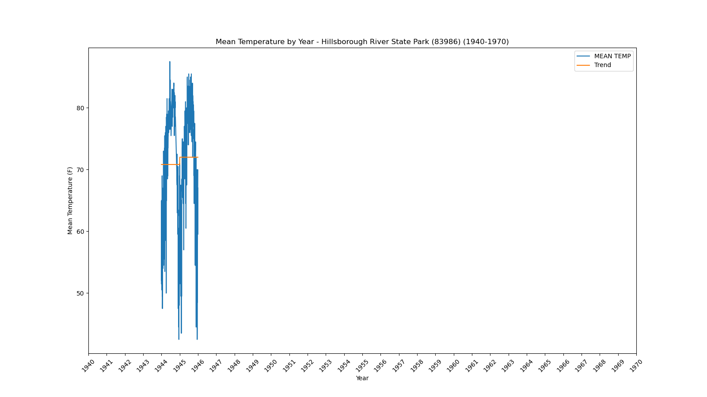</a></div>`)[0];
                popup_e178d4dcec3c3a4fd81d0297633475b7.setContent(html_e280d9f11c05825671e191cb018812af);
            
        

        marker_44787a5a3047476e1efd2ccfded9c5ae.bindPopup(popup_e178d4dcec3c3a4fd81d0297633475b7)
        ;

        
    
    
            var marker_d5fd3ef33cddbd9c5077b37d8939c6c9 = L.marker(
                [28.84, -82.34],
                {}
            ).addTo(map_d27828e8ee3b01b4d6c76cfca5fbf2bd);
        
    
            var icon_dfcbbc82f4fa9dd1c12a4f46b6f09049 = L.AwesomeMarkers.icon(
                {"extraClasses": "fa-rotate-0", "icon": "info-sign", "iconColor": "white", "markerColor": "blue", "prefix": "glyphicon"}
            );
            marker_d5fd3ef33cddbd9c5077b37d8939c6c9.setIcon(icon_dfcbbc82f4fa9dd1c12a4f46b6f09049);
        
    
        var popup_f02d558f84109f43c0d56e1086e250f6 = L.popup({"maxWidth": 1000, "minWidth": 500});

        
            
                var html_72f79e54144137ea15bb1ea97fc2e908 = $(`<div id="html_72f79e54144137ea15bb1ea97fc2e908" style="width: 100.0%; height: 100.0%;"><b>Iverness 3 SE (84289)</b><br>lat: 28.84, lon: -82.34<br><a href='../../static/img/plots/timeseries/meantemp_daily/84289_1940-1970.png' target='_BLANK'>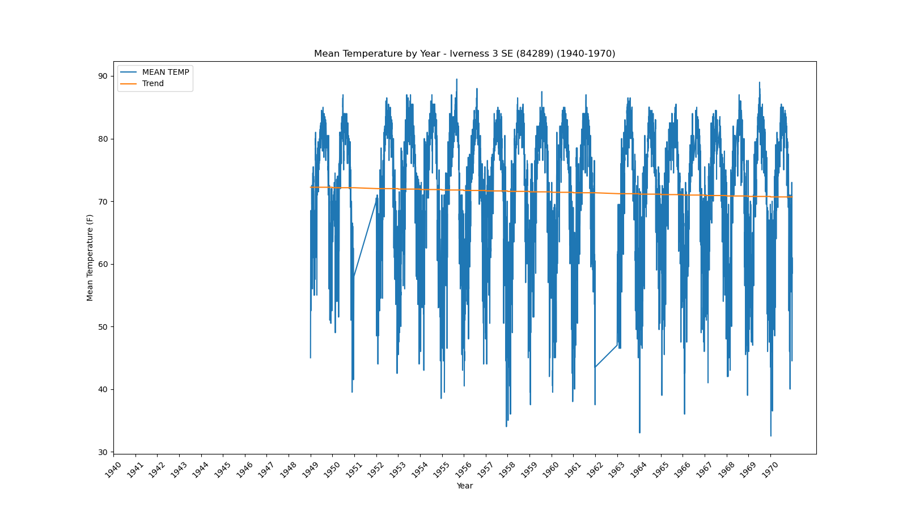</a></div>`)[0];
                popup_f02d558f84109f43c0d56e1086e250f6.setContent(html_72f79e54144137ea15bb1ea97fc2e908);
            
        

        marker_d5fd3ef33cddbd9c5077b37d8939c6c9.bindPopup(popup_f02d558f84109f43c0d56e1086e250f6)
        ;

        
    
    
            var marker_a8fd220455d8759f56d79b1a26c63cf6 = L.marker(
                [30.49, -81.68],
                {}
            ).addTo(map_d27828e8ee3b01b4d6c76cfca5fbf2bd);
        
    
            var icon_13b775766d2cb54df76035cb8c6d37e9 = L.AwesomeMarkers.icon(
                {"extraClasses": "fa-rotate-0", "icon": "info-sign", "iconColor": "white", "markerColor": "blue", "prefix": "glyphicon"}
            );
            marker_a8fd220455d8759f56d79b1a26c63cf6.setIcon(icon_13b775766d2cb54df76035cb8c6d37e9);
        
    
        var popup_36cb3fae32001f424cf5793d8b634622 = L.popup({"maxWidth": 1000, "minWidth": 500});

        
            
                var html_dc667c8d6c7321653af13081c38d47a8 = $(`<div id="html_dc667c8d6c7321653af13081c38d47a8" style="width: 100.0%; height: 100.0%;"><b>Jacksonville Intl Airport (84358)</b><br>lat: 30.49, lon: -81.68<br><a href='../../static/img/plots/timeseries/meantemp_daily/84358_1940-1970.png' target='_BLANK'>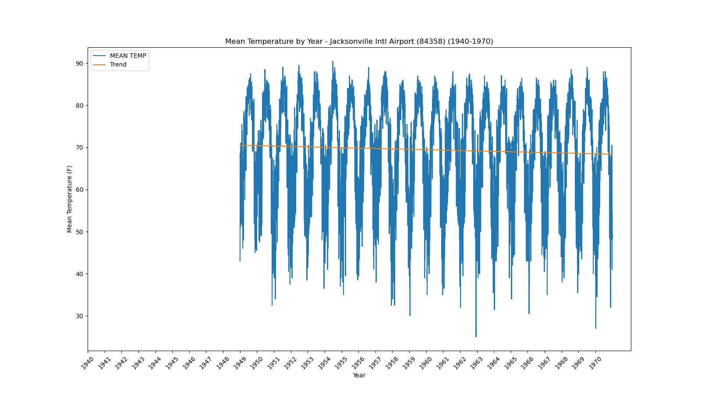</a></div>`)[0];
                popup_36cb3fae32001f424cf5793d8b634622.setContent(html_dc667c8d6c7321653af13081c38d47a8);
            
        

        marker_a8fd220455d8759f56d79b1a26c63cf6.bindPopup(popup_36cb3fae32001f424cf5793d8b634622)
        ;

        
    
    
            var marker_1a499aa1a72a82fa0def36b385b1e577 = L.marker(
                [30.28, -81.39],
                {}
            ).addTo(map_d27828e8ee3b01b4d6c76cfca5fbf2bd);
        
    
            var icon_c2cc06aab679c1cb2767ace4ab4c018e = L.AwesomeMarkers.icon(
                {"extraClasses": "fa-rotate-0", "icon": "info-sign", "iconColor": "white", "markerColor": "blue", "prefix": "glyphicon"}
            );
            marker_1a499aa1a72a82fa0def36b385b1e577.setIcon(icon_c2cc06aab679c1cb2767ace4ab4c018e);
        
    
        var popup_a26f0c654a6a8df91957418291615ef0 = L.popup({"maxWidth": 1000, "minWidth": 500});

        
            
                var html_5834a04cd7190d10b31529d840c096f9 = $(`<div id="html_5834a04cd7190d10b31529d840c096f9" style="width: 100.0%; height: 100.0%;"><b>Jacksonville Beach (84366)</b><br>lat: 30.28, lon: -81.39<br><a href='../../static/img/plots/timeseries/meantemp_daily/84366_1940-1970.png' target='_BLANK'>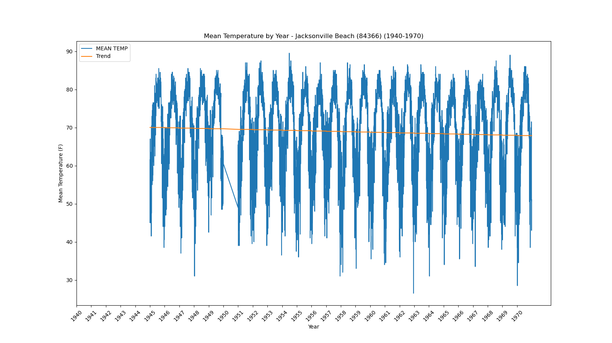</a></div>`)[0];
                popup_a26f0c654a6a8df91957418291615ef0.setContent(html_5834a04cd7190d10b31529d840c096f9);
            
        

        marker_1a499aa1a72a82fa0def36b385b1e577.bindPopup(popup_a26f0c654a6a8df91957418291615ef0)
        ;

        
    
    
            var marker_8d38f3c4357694a963b772ec1116c845 = L.marker(
                [30.52, -82.94],
                {}
            ).addTo(map_d27828e8ee3b01b4d6c76cfca5fbf2bd);
        
    
            var icon_b8c3432af6a8bef5c98067f0085ae59d = L.AwesomeMarkers.icon(
                {"extraClasses": "fa-rotate-0", "icon": "info-sign", "iconColor": "white", "markerColor": "orange", "prefix": "glyphicon"}
            );
            marker_8d38f3c4357694a963b772ec1116c845.setIcon(icon_b8c3432af6a8bef5c98067f0085ae59d);
        
    
        var popup_ef4afe3d4bffaec2a1ee71b9a51af8e5 = L.popup({"maxWidth": 1000, "minWidth": 500});

        
            
                var html_33449959f0f95c976b58a1a4c849c1c9 = $(`<div id="html_33449959f0f95c976b58a1a4c849c1c9" style="width: 100.0%; height: 100.0%;"><b>Jasper (84394)</b><br>lat: 30.52, lon: -82.94<br><a href='../../static/img/plots/timeseries/meantemp_daily/84394_1940-1970.png' target='_BLANK'></a></div>`)[0];
                popup_ef4afe3d4bffaec2a1ee71b9a51af8e5.setContent(html_33449959f0f95c976b58a1a4c849c1c9);
            
        

        marker_8d38f3c4357694a963b772ec1116c845.bindPopup(popup_ef4afe3d4bffaec2a1ee71b9a51af8e5)
        ;

        
    
    
            var marker_7ded53b1e3de9b26ef5de2064c0be52c = L.marker(
                [24.55, -81.76],
                {}
            ).addTo(map_d27828e8ee3b01b4d6c76cfca5fbf2bd);
        
    
            var icon_1cf39d05107ff25f2a4f126e42223748 = L.AwesomeMarkers.icon(
                {"extraClasses": "fa-rotate-0", "icon": "info-sign", "iconColor": "white", "markerColor": "blue", "prefix": "glyphicon"}
            );
            marker_7ded53b1e3de9b26ef5de2064c0be52c.setIcon(icon_1cf39d05107ff25f2a4f126e42223748);
        
    
        var popup_aaa3a1cd8de7fecb3b8ad439fcc14bda = L.popup({"maxWidth": 1000, "minWidth": 500});

        
            
                var html_1e8ea8ba21d02bca89b79c056d8b8dec = $(`<div id="html_1e8ea8ba21d02bca89b79c056d8b8dec" style="width: 100.0%; height: 100.0%;"><b>Key West Intl Airport (84570)</b><br>lat: 24.55, lon: -81.76<br><a href='../../static/img/plots/timeseries/meantemp_daily/84570_1940-1970.png' target='_BLANK'>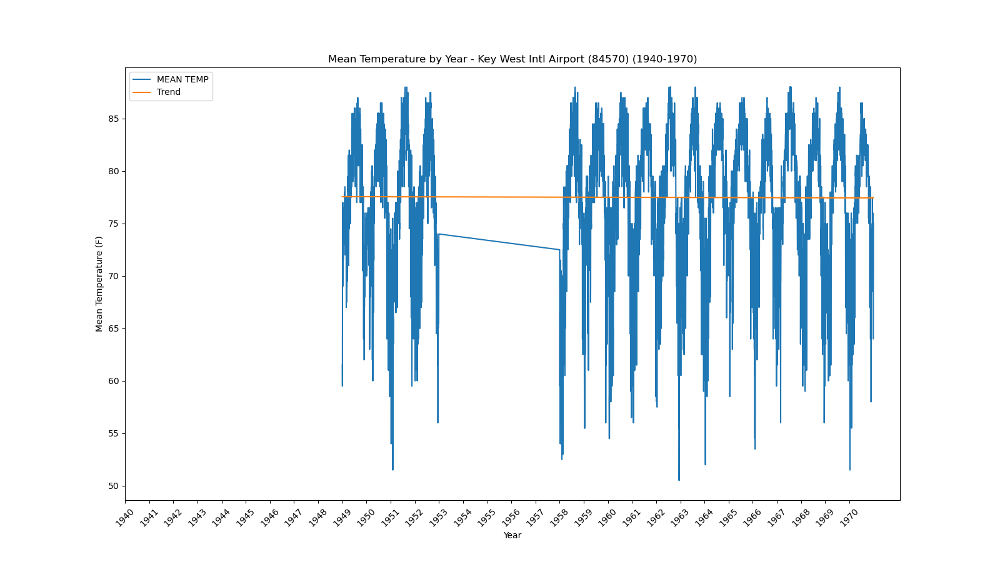</a></div>`)[0];
                popup_aaa3a1cd8de7fecb3b8ad439fcc14bda.setContent(html_1e8ea8ba21d02bca89b79c056d8b8dec);
            
        

        marker_7ded53b1e3de9b26ef5de2064c0be52c.bindPopup(popup_aaa3a1cd8de7fecb3b8ad439fcc14bda)
        ;

        
    
    
            var marker_1bec5198d30edc75e4f93150bdc40182 = L.marker(
                [28.29, -81.41],
                {}
            ).addTo(map_d27828e8ee3b01b4d6c76cfca5fbf2bd);
        
    
            var icon_60e82ea58294f10e274be882b15df2eb = L.AwesomeMarkers.icon(
                {"extraClasses": "fa-rotate-0", "icon": "info-sign", "iconColor": "white", "markerColor": "blue", "prefix": "glyphicon"}
            );
            marker_1bec5198d30edc75e4f93150bdc40182.setIcon(icon_60e82ea58294f10e274be882b15df2eb);
        
    
        var popup_46b3b701ba70936de0f051b410ad8d1c = L.popup({"maxWidth": 1000, "minWidth": 500});

        
            
                var html_15817ab2ecf259fd86896b3bf7ecb4fe = $(`<div id="html_15817ab2ecf259fd86896b3bf7ecb4fe" style="width: 100.0%; height: 100.0%;"><b>Kissimmee (84625)</b><br>lat: 28.29, lon: -81.41<br><a href='../../static/img/plots/timeseries/meantemp_daily/84625_1940-1970.png' target='_BLANK'></a></div>`)[0];
                popup_46b3b701ba70936de0f051b410ad8d1c.setContent(html_15817ab2ecf259fd86896b3bf7ecb4fe);
            
        

        marker_1bec5198d30edc75e4f93150bdc40182.bindPopup(popup_46b3b701ba70936de0f051b410ad8d1c)
        ;

        
    
    
            var marker_b7a4e0d2464fa0d28f34c1102b9887f1 = L.marker(
                [26.71, -81.46],
                {}
            ).addTo(map_d27828e8ee3b01b4d6c76cfca5fbf2bd);
        
    
            var icon_7b78159d9fa7f16a9092c48c7a2bf91e = L.AwesomeMarkers.icon(
                {"extraClasses": "fa-rotate-0", "icon": "info-sign", "iconColor": "white", "markerColor": "blue", "prefix": "glyphicon"}
            );
            marker_b7a4e0d2464fa0d28f34c1102b9887f1.setIcon(icon_7b78159d9fa7f16a9092c48c7a2bf91e);
        
    
        var popup_85c65099ff1a1c4e9071b24763e01573 = L.popup({"maxWidth": 1000, "minWidth": 500});

        
            
                var html_4c063b3e615f34b75ef44e99ee7acace = $(`<div id="html_4c063b3e615f34b75ef44e99ee7acace" style="width: 100.0%; height: 100.0%;"><b>La Belle (84662)</b><br>lat: 26.71, lon: -81.46<br><a href='../../static/img/plots/timeseries/meantemp_daily/84662_1940-1970.png' target='_BLANK'></a></div>`)[0];
                popup_85c65099ff1a1c4e9071b24763e01573.setContent(html_4c063b3e615f34b75ef44e99ee7acace);
            
        

        marker_b7a4e0d2464fa0d28f34c1102b9887f1.bindPopup(popup_85c65099ff1a1c4e9071b24763e01573)
        ;

        
    
    
            var marker_7338345364865c9431a66678853850ce = L.marker(
                [30.12, -82.64],
                {}
            ).addTo(map_d27828e8ee3b01b4d6c76cfca5fbf2bd);
        
    
            var icon_3a50cc00cdbd02356bfe8300986c93b5 = L.AwesomeMarkers.icon(
                {"extraClasses": "fa-rotate-0", "icon": "info-sign", "iconColor": "white", "markerColor": "blue", "prefix": "glyphicon"}
            );
            marker_7338345364865c9431a66678853850ce.setIcon(icon_3a50cc00cdbd02356bfe8300986c93b5);
        
    
        var popup_25d31c39df1bc270e1265746d88c8924 = L.popup({"maxWidth": 1000, "minWidth": 500});

        
            
                var html_5b094dd7e7569b3c494aff57ec6f2535 = $(`<div id="html_5b094dd7e7569b3c494aff57ec6f2535" style="width: 100.0%; height: 100.0%;"><b>Lake City 2 E (84731)</b><br>lat: 30.12, lon: -82.64<br><a href='../../static/img/plots/timeseries/meantemp_daily/84731_1940-1970.png' target='_BLANK'></a></div>`)[0];
                popup_25d31c39df1bc270e1265746d88c8924.setContent(html_5b094dd7e7569b3c494aff57ec6f2535);
            
        

        marker_7338345364865c9431a66678853850ce.bindPopup(popup_25d31c39df1bc270e1265746d88c8924)
        ;

        
    
    
            var marker_8a05c5c1b7b1397f1b65175e9d3495e6 = L.marker(
                [26.88, -81.78],
                {}
            ).addTo(map_d27828e8ee3b01b4d6c76cfca5fbf2bd);
        
    
            var icon_7c62a77521e1c6bf376b8983ff08188e = L.AwesomeMarkers.icon(
                {"extraClasses": "fa-rotate-0", "icon": "info-sign", "iconColor": "white", "markerColor": "blue", "prefix": "glyphicon"}
            );
            marker_8a05c5c1b7b1397f1b65175e9d3495e6.setIcon(icon_7c62a77521e1c6bf376b8983ff08188e);
        
    
        var popup_9dcde1babadc6550f0f185f4ee90767f = L.popup({"maxWidth": 1000, "minWidth": 500});

        
            
                var html_6520a637a36873f7293b6b53ba1ef35e = $(`<div id="html_6520a637a36873f7293b6b53ba1ef35e" style="width: 100.0%; height: 100.0%;"><b>Lisbon (85076)</b><br>lat: 26.88, lon: -81.78<br><a href='../../static/img/plots/timeseries/meantemp_daily/85076_1940-1970.png' target='_BLANK'>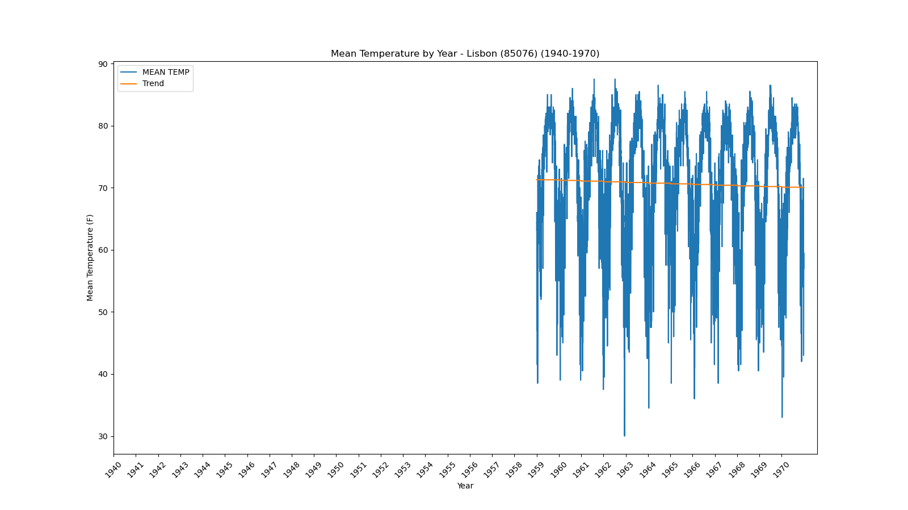</a></div>`)[0];
                popup_9dcde1babadc6550f0f185f4ee90767f.setContent(html_6520a637a36873f7293b6b53ba1ef35e);
            
        

        marker_8a05c5c1b7b1397f1b65175e9d3495e6.bindPopup(popup_9dcde1babadc6550f0f185f4ee90767f)
        ;

        
    
    
            var marker_bdf923c51a2f09197040b301eb22bb68 = L.marker(
                [30.29, -82.99],
                {}
            ).addTo(map_d27828e8ee3b01b4d6c76cfca5fbf2bd);
        
    
            var icon_19d1a5698f20b0aa58b9c3fb48df13e8 = L.AwesomeMarkers.icon(
                {"extraClasses": "fa-rotate-0", "icon": "info-sign", "iconColor": "white", "markerColor": "blue", "prefix": "glyphicon"}
            );
            marker_bdf923c51a2f09197040b301eb22bb68.setIcon(icon_19d1a5698f20b0aa58b9c3fb48df13e8);
        
    
        var popup_30ff116ff57ff547687ad15764a5f1a4 = L.popup({"maxWidth": 1000, "minWidth": 500});

        
            
                var html_91069810ca4062d7035824f26a9231a8 = $(`<div id="html_91069810ca4062d7035824f26a9231a8" style="width: 100.0%; height: 100.0%;"><b>Live Oak (85099)</b><br>lat: 30.29, lon: -82.99<br><a href='../../static/img/plots/timeseries/meantemp_daily/85099_1940-1970.png' target='_BLANK'></a></div>`)[0];
                popup_30ff116ff57ff547687ad15764a5f1a4.setContent(html_91069810ca4062d7035824f26a9231a8);
            
        

        marker_bdf923c51a2f09197040b301eb22bb68.bindPopup(popup_30ff116ff57ff547687ad15764a5f1a4)
        ;

        
    
    
            var marker_5a2a8ebbd9f8d1005e22c55c4a4bf5ff = L.marker(
                [30.48, -83.24],
                {}
            ).addTo(map_d27828e8ee3b01b4d6c76cfca5fbf2bd);
        
    
            var icon_751386f78b6e8c7a4507e7c14f8c2cc5 = L.AwesomeMarkers.icon(
                {"extraClasses": "fa-rotate-0", "icon": "info-sign", "iconColor": "white", "markerColor": "blue", "prefix": "glyphicon"}
            );
            marker_5a2a8ebbd9f8d1005e22c55c4a4bf5ff.setIcon(icon_751386f78b6e8c7a4507e7c14f8c2cc5);
        
    
        var popup_90150a93eecca073e5cc633bb39766aa = L.popup({"maxWidth": 1000, "minWidth": 500});

        
            
                var html_39f0078b570ad5d0fb10a422630d1169 = $(`<div id="html_39f0078b570ad5d0fb10a422630d1169" style="width: 100.0%; height: 100.0%;"><b>Madison (85275)</b><br>lat: 30.48, lon: -83.24<br><a href='../../static/img/plots/timeseries/meantemp_daily/85275_1940-1970.png' target='_BLANK'></a></div>`)[0];
                popup_90150a93eecca073e5cc633bb39766aa.setContent(html_39f0078b570ad5d0fb10a422630d1169);
            
        

        marker_5a2a8ebbd9f8d1005e22c55c4a4bf5ff.bindPopup(popup_90150a93eecca073e5cc633bb39766aa)
        ;

        
    
    
            var marker_25b140a5fd3748974d8fd9a66166465d = L.marker(
                [30.05, -83.18],
                {}
            ).addTo(map_d27828e8ee3b01b4d6c76cfca5fbf2bd);
        
    
            var icon_1d240ea6a0e657a75b6e2b5011bb51c6 = L.AwesomeMarkers.icon(
                {"extraClasses": "fa-rotate-0", "icon": "info-sign", "iconColor": "white", "markerColor": "blue", "prefix": "glyphicon"}
            );
            marker_25b140a5fd3748974d8fd9a66166465d.setIcon(icon_1d240ea6a0e657a75b6e2b5011bb51c6);
        
    
        var popup_3b018a8a1a790e5e607eca8d51376bfb = L.popup({"maxWidth": 1000, "minWidth": 500});

        
            
                var html_d973946bdd0f5c20ad6a3ad8d5f8ffee = $(`<div id="html_d973946bdd0f5c20ad6a3ad8d5f8ffee" style="width: 100.0%; height: 100.0%;"><b>Mayo (85539)</b><br>lat: 30.05, lon: -83.18<br><a href='../../static/img/plots/timeseries/meantemp_daily/85539_1940-1970.png' target='_BLANK'></a></div>`)[0];
                popup_3b018a8a1a790e5e607eca8d51376bfb.setContent(html_d973946bdd0f5c20ad6a3ad8d5f8ffee);
            
        

        marker_25b140a5fd3748974d8fd9a66166465d.bindPopup(popup_3b018a8a1a790e5e607eca8d51376bfb)
        ;

        
    
    
            var marker_10e6ebed2dc2b41c450f0b0c2a6c7dfd = L.marker(
                [25.79, -80.14],
                {}
            ).addTo(map_d27828e8ee3b01b4d6c76cfca5fbf2bd);
        
    
            var icon_6c4b2ac44a6da0522b71576797c08b96 = L.AwesomeMarkers.icon(
                {"extraClasses": "fa-rotate-0", "icon": "info-sign", "iconColor": "white", "markerColor": "orange", "prefix": "glyphicon"}
            );
            marker_10e6ebed2dc2b41c450f0b0c2a6c7dfd.setIcon(icon_6c4b2ac44a6da0522b71576797c08b96);
        
    
        var popup_1223359020e2dd43d84b209614a37363 = L.popup({"maxWidth": 1000, "minWidth": 500});

        
            
                var html_bc6439a1bc30daa1c2e985fcca21b375 = $(`<div id="html_bc6439a1bc30daa1c2e985fcca21b375" style="width: 100.0%; height: 100.0%;"><b>Miami Beach (85658)</b><br>lat: 25.79, lon: -80.14<br><a href='../../static/img/plots/timeseries/meantemp_daily/85658_1940-1970.png' target='_BLANK'>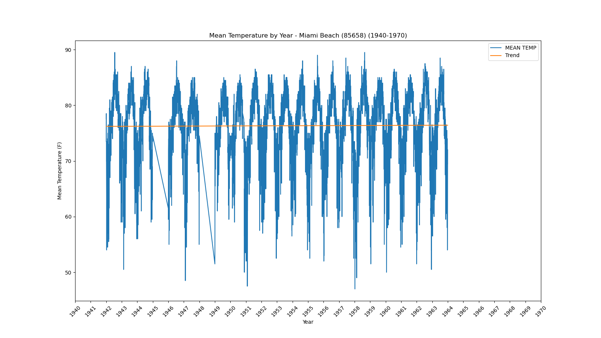</a></div>`)[0];
                popup_1223359020e2dd43d84b209614a37363.setContent(html_bc6439a1bc30daa1c2e985fcca21b375);
            
        

        marker_10e6ebed2dc2b41c450f0b0c2a6c7dfd.bindPopup(popup_1223359020e2dd43d84b209614a37363)
        ;

        
    
    
            var marker_add99ef0ee656273f0789479bc0a218a = L.marker(
                [25.79, -80.28],
                {}
            ).addTo(map_d27828e8ee3b01b4d6c76cfca5fbf2bd);
        
    
            var icon_4e6c22212dc2cd8b9dd90915d4ba41d9 = L.AwesomeMarkers.icon(
                {"extraClasses": "fa-rotate-0", "icon": "info-sign", "iconColor": "white", "markerColor": "blue", "prefix": "glyphicon"}
            );
            marker_add99ef0ee656273f0789479bc0a218a.setIcon(icon_4e6c22212dc2cd8b9dd90915d4ba41d9);
        
    
        var popup_4ee410ef19ee85eac135e979baaa8b99 = L.popup({"maxWidth": 1000, "minWidth": 500});

        
            
                var html_9b3c96f762ee0f87f958d306081c0f2b = $(`<div id="html_9b3c96f762ee0f87f958d306081c0f2b" style="width: 100.0%; height: 100.0%;"><b>Miami Intl Airport (85663)</b><br>lat: 25.79, lon: -80.28<br><a href='../../static/img/plots/timeseries/meantemp_daily/85663_1940-1970.png' target='_BLANK'></a></div>`)[0];
                popup_4ee410ef19ee85eac135e979baaa8b99.setContent(html_9b3c96f762ee0f87f958d306081c0f2b);
            
        

        marker_add99ef0ee656273f0789479bc0a218a.bindPopup(popup_4ee410ef19ee85eac135e979baaa8b99)
        ;

        
    
    
            var marker_a634dc91c66c23b47b1a8fbbb2c41ae5 = L.marker(
                [30.29, -83.46],
                {}
            ).addTo(map_d27828e8ee3b01b4d6c76cfca5fbf2bd);
        
    
            var icon_d18b2035c82c2d1c4ff5d94f239b603d = L.AwesomeMarkers.icon(
                {"extraClasses": "fa-rotate-0", "icon": "info-sign", "iconColor": "white", "markerColor": "blue", "prefix": "glyphicon"}
            );
            marker_a634dc91c66c23b47b1a8fbbb2c41ae5.setIcon(icon_d18b2035c82c2d1c4ff5d94f239b603d);
        
    
        var popup_18304b822f93825eb334fea35be47612 = L.popup({"maxWidth": 1000, "minWidth": 500});

        
            
                var html_52626702a469a1823b979ce128ef9148 = $(`<div id="html_52626702a469a1823b979ce128ef9148" style="width: 100.0%; height: 100.0%;"><b>Monticello 5 SE (85879)</b><br>lat: 30.29, lon: -83.46<br><a href='../../static/img/plots/timeseries/meantemp_daily/85879_1940-1970.png' target='_BLANK'></a></div>`)[0];
                popup_18304b822f93825eb334fea35be47612.setContent(html_52626702a469a1823b979ce128ef9148);
            
        

        marker_a634dc91c66c23b47b1a8fbbb2c41ae5.bindPopup(popup_18304b822f93825eb334fea35be47612)
        ;

        
    
    
            var marker_0b038b413f6e47e9b803531d1cf74537 = L.marker(
                [26.84, -81.09],
                {}
            ).addTo(map_d27828e8ee3b01b4d6c76cfca5fbf2bd);
        
    
            var icon_0a4d1c5eaca22f57a6f3cd61a5096b8e = L.AwesomeMarkers.icon(
                {"extraClasses": "fa-rotate-0", "icon": "info-sign", "iconColor": "white", "markerColor": "blue", "prefix": "glyphicon"}
            );
            marker_0b038b413f6e47e9b803531d1cf74537.setIcon(icon_0a4d1c5eaca22f57a6f3cd61a5096b8e);
        
    
        var popup_fee8ab6f1d0d9e93eef51f0ead0b8f44 = L.popup({"maxWidth": 1000, "minWidth": 500});

        
            
                var html_86cdd98c4b362d2b8b60cc72441b3fe3 = $(`<div id="html_86cdd98c4b362d2b8b60cc72441b3fe3" style="width: 100.0%; height: 100.0%;"><b>Moore Haven Lock 1 (85895)</b><br>lat: 26.84, lon: -81.09<br><a href='../../static/img/plots/timeseries/meantemp_daily/85895_1940-1970.png' target='_BLANK'>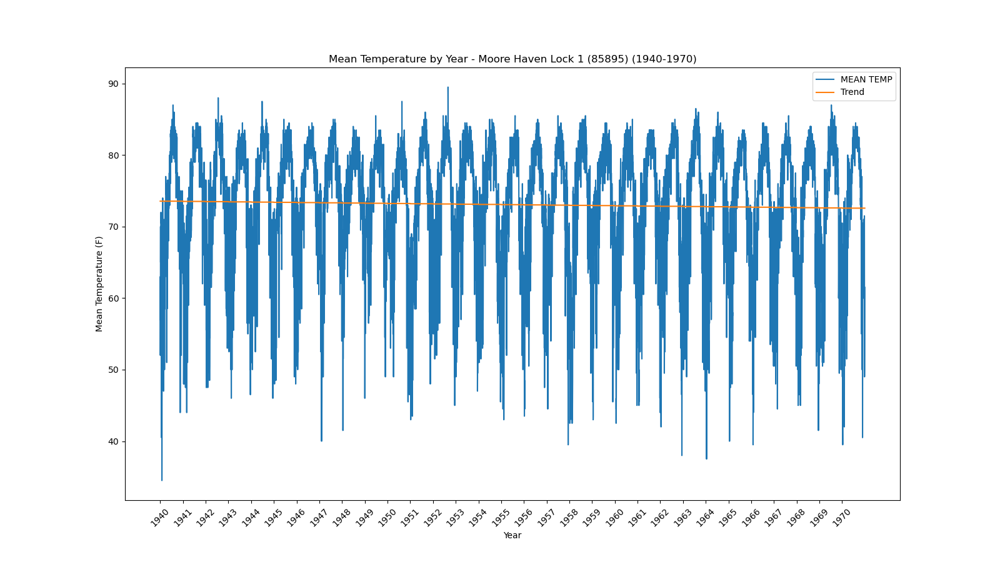</a></div>`)[0];
                popup_fee8ab6f1d0d9e93eef51f0ead0b8f44.setContent(html_86cdd98c4b362d2b8b60cc72441b3fe3);
            
        

        marker_0b038b413f6e47e9b803531d1cf74537.bindPopup(popup_fee8ab6f1d0d9e93eef51f0ead0b8f44)
        ;

        
    
    
            var marker_64d6b93f054786b4479bb032095ace7f = L.marker(
                [27.93, -81.59],
                {}
            ).addTo(map_d27828e8ee3b01b4d6c76cfca5fbf2bd);
        
    
            var icon_6811e9fdc991b60f2ebaaf27fbc9a953 = L.AwesomeMarkers.icon(
                {"extraClasses": "fa-rotate-0", "icon": "info-sign", "iconColor": "white", "markerColor": "blue", "prefix": "glyphicon"}
            );
            marker_64d6b93f054786b4479bb032095ace7f.setIcon(icon_6811e9fdc991b60f2ebaaf27fbc9a953);
        
    
        var popup_a1b1d767aba9b2d2c21ca55a53a3caab = L.popup({"maxWidth": 1000, "minWidth": 500});

        
            
                var html_ec62b900a230b412bcfb5c791048b28b = $(`<div id="html_ec62b900a230b412bcfb5c791048b28b" style="width: 100.0%; height: 100.0%;"><b>Mountain Lake (85973)</b><br>lat: 27.93, lon: -81.59<br><a href='../../static/img/plots/timeseries/meantemp_daily/85973_1940-1970.png' target='_BLANK'>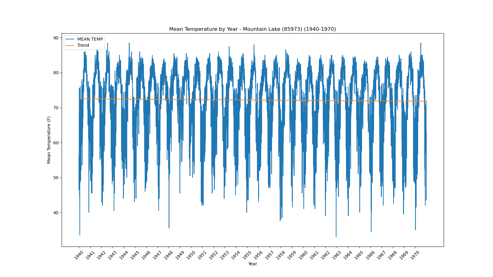</a></div>`)[0];
                popup_a1b1d767aba9b2d2c21ca55a53a3caab.setContent(html_ec62b900a230b412bcfb5c791048b28b);
            
        

        marker_64d6b93f054786b4479bb032095ace7f.bindPopup(popup_a1b1d767aba9b2d2c21ca55a53a3caab)
        ;

        
    
    
            var marker_0abe083dba1c92e24c71cb7c487de7cc = L.marker(
                [27.2, -82.25],
                {}
            ).addTo(map_d27828e8ee3b01b4d6c76cfca5fbf2bd);
        
    
            var icon_21d0f7152d92c7b553237a74546a8c39 = L.AwesomeMarkers.icon(
                {"extraClasses": "fa-rotate-0", "icon": "info-sign", "iconColor": "white", "markerColor": "blue", "prefix": "glyphicon"}
            );
            marker_0abe083dba1c92e24c71cb7c487de7cc.setIcon(icon_21d0f7152d92c7b553237a74546a8c39);
        
    
        var popup_80aaf4e0d4f2ea884fde15c82cf2fae4 = L.popup({"maxWidth": 1000, "minWidth": 500});

        
            
                var html_335e6f775ecb3fdb4cb165ff4eeac26f = $(`<div id="html_335e6f775ecb3fdb4cb165ff4eeac26f" style="width: 100.0%; height: 100.0%;"><b>Myakka River State Park (86065)</b><br>lat: 27.2, lon: -82.25<br><a href='../../static/img/plots/timeseries/meantemp_daily/86065_1940-1970.png' target='_BLANK'></a></div>`)[0];
                popup_80aaf4e0d4f2ea884fde15c82cf2fae4.setContent(html_335e6f775ecb3fdb4cb165ff4eeac26f);
            
        

        marker_0abe083dba1c92e24c71cb7c487de7cc.bindPopup(popup_80aaf4e0d4f2ea884fde15c82cf2fae4)
        ;

        
    
    
            var marker_461ae3ebed03c2feb2cf6120d78aa2d4 = L.marker(
                [26.15, -81.77],
                {}
            ).addTo(map_d27828e8ee3b01b4d6c76cfca5fbf2bd);
        
    
            var icon_40e4587c73a366520ed44ebe45748dea = L.AwesomeMarkers.icon(
                {"extraClasses": "fa-rotate-0", "icon": "info-sign", "iconColor": "white", "markerColor": "blue", "prefix": "glyphicon"}
            );
            marker_461ae3ebed03c2feb2cf6120d78aa2d4.setIcon(icon_40e4587c73a366520ed44ebe45748dea);
        
    
        var popup_e37bb01238363f30b743a50b334ae88e = L.popup({"maxWidth": 1000, "minWidth": 500});

        
            
                var html_0c1ad782cd27c33d9ae84dc64fa6ba32 = $(`<div id="html_0c1ad782cd27c33d9ae84dc64fa6ba32" style="width: 100.0%; height: 100.0%;"><b>Naples (86078)</b><br>lat: 26.15, lon: -81.77<br><a href='../../static/img/plots/timeseries/meantemp_daily/86078_1940-1970.png' target='_BLANK'></a></div>`)[0];
                popup_e37bb01238363f30b743a50b334ae88e.setContent(html_0c1ad782cd27c33d9ae84dc64fa6ba32);
            
        

        marker_461ae3ebed03c2feb2cf6120d78aa2d4.bindPopup(popup_e37bb01238363f30b743a50b334ae88e)
        ;

        
    
    
            var marker_6666aeb4edac0c04b5082aac248f0be1 = L.marker(
                [30.52, -86.48],
                {}
            ).addTo(map_d27828e8ee3b01b4d6c76cfca5fbf2bd);
        
    
            var icon_006070c5a031286e0f4d6bb05696408e = L.AwesomeMarkers.icon(
                {"extraClasses": "fa-rotate-0", "icon": "info-sign", "iconColor": "white", "markerColor": "blue", "prefix": "glyphicon"}
            );
            marker_6666aeb4edac0c04b5082aac248f0be1.setIcon(icon_006070c5a031286e0f4d6bb05696408e);
        
    
        var popup_d38f4c18b812d872d73de1b1371a1a55 = L.popup({"maxWidth": 1000, "minWidth": 500});

        
            
                var html_15a429f0ccdff263be4db4036650032a = $(`<div id="html_15a429f0ccdff263be4db4036650032a" style="width: 100.0%; height: 100.0%;"><b>Niceville (86240)</b><br>lat: 30.52, lon: -86.48<br><a href='../../static/img/plots/timeseries/meantemp_daily/86240_1940-1970.png' target='_BLANK'></a></div>`)[0];
                popup_d38f4c18b812d872d73de1b1371a1a55.setContent(html_15a429f0ccdff263be4db4036650032a);
            
        

        marker_6666aeb4edac0c04b5082aac248f0be1.bindPopup(popup_d38f4c18b812d872d73de1b1371a1a55)
        ;

        
    
    
            var marker_8f4575523fc570c87b27bdd5a144dcce = L.marker(
                [29.19, -82.14],
                {}
            ).addTo(map_d27828e8ee3b01b4d6c76cfca5fbf2bd);
        
    
            var icon_7101badd8789f7b1a08278ebf9a3cbc5 = L.AwesomeMarkers.icon(
                {"extraClasses": "fa-rotate-0", "icon": "info-sign", "iconColor": "white", "markerColor": "orange", "prefix": "glyphicon"}
            );
            marker_8f4575523fc570c87b27bdd5a144dcce.setIcon(icon_7101badd8789f7b1a08278ebf9a3cbc5);
        
    
        var popup_a528f40cf2ab9746a670fb6347b7afbe = L.popup({"maxWidth": 1000, "minWidth": 500});

        
            
                var html_1ab023fee5f1d02ce592f4e2e58fb6c1 = $(`<div id="html_1ab023fee5f1d02ce592f4e2e58fb6c1" style="width: 100.0%; height: 100.0%;"><b>Ocala (86414)</b><br>lat: 29.19, lon: -82.14<br><a href='../../static/img/plots/timeseries/meantemp_daily/86414_1940-1970.png' target='_BLANK'></a></div>`)[0];
                popup_a528f40cf2ab9746a670fb6347b7afbe.setContent(html_1ab023fee5f1d02ce592f4e2e58fb6c1);
            
        

        marker_8f4575523fc570c87b27bdd5a144dcce.bindPopup(popup_a528f40cf2ab9746a670fb6347b7afbe)
        ;

        
    
    
            var marker_f268aa0d2c47a0866890fad64cce5e22 = L.marker(
                [27.24, -80.83],
                {}
            ).addTo(map_d27828e8ee3b01b4d6c76cfca5fbf2bd);
        
    
            var icon_c2dae084218db081ea87aedca2b8dc21 = L.AwesomeMarkers.icon(
                {"extraClasses": "fa-rotate-0", "icon": "info-sign", "iconColor": "white", "markerColor": "blue", "prefix": "glyphicon"}
            );
            marker_f268aa0d2c47a0866890fad64cce5e22.setIcon(icon_c2dae084218db081ea87aedca2b8dc21);
        
    
        var popup_d68075a9e3c67a985c12120c85bc0f2c = L.popup({"maxWidth": 1000, "minWidth": 500});

        
            
                var html_58d2122597a92cedf5234153fad2eae1 = $(`<div id="html_58d2122597a92cedf5234153fad2eae1" style="width: 100.0%; height: 100.0%;"><b>Okeechobee (86485)</b><br>lat: 27.24, lon: -80.83<br><a href='../../static/img/plots/timeseries/meantemp_daily/86485_1940-1970.png' target='_BLANK'></a></div>`)[0];
                popup_d68075a9e3c67a985c12120c85bc0f2c.setContent(html_58d2122597a92cedf5234153fad2eae1);
            
        

        marker_f268aa0d2c47a0866890fad64cce5e22.bindPopup(popup_d68075a9e3c67a985c12120c85bc0f2c)
        ;

        
    
    
            var marker_90d133b9377099325041c86d9cf67cdd = L.marker(
                [28.43, -81.31],
                {}
            ).addTo(map_d27828e8ee3b01b4d6c76cfca5fbf2bd);
        
    
            var icon_a92f6ada80216fee9b39349f5968e929 = L.AwesomeMarkers.icon(
                {"extraClasses": "fa-rotate-0", "icon": "info-sign", "iconColor": "white", "markerColor": "blue", "prefix": "glyphicon"}
            );
            marker_90d133b9377099325041c86d9cf67cdd.setIcon(icon_a92f6ada80216fee9b39349f5968e929);
        
    
        var popup_bb1ef0a820b2118068967f615345695d = L.popup({"maxWidth": 1000, "minWidth": 500});

        
            
                var html_00bc1853e5c3808e565bdecfb9cc2891 = $(`<div id="html_00bc1853e5c3808e565bdecfb9cc2891" style="width: 100.0%; height: 100.0%;"><b>Orlando Intl Airport (86628)</b><br>lat: 28.43, lon: -81.31<br><a href='../../static/img/plots/timeseries/meantemp_daily/86628_1940-1970.png' target='_BLANK'></a></div>`)[0];
                popup_bb1ef0a820b2118068967f615345695d.setContent(html_00bc1853e5c3808e565bdecfb9cc2891);
            
        

        marker_90d133b9377099325041c86d9cf67cdd.bindPopup(popup_bb1ef0a820b2118068967f615345695d)
        ;

        
    
    
            var marker_18d299519cb95f6c8b802b0c2586834c = L.marker(
                [27.59, -82.43],
                {}
            ).addTo(map_d27828e8ee3b01b4d6c76cfca5fbf2bd);
        
    
            var icon_78d34531a1cb4f2dd918ecf4bea28aec = L.AwesomeMarkers.icon(
                {"extraClasses": "fa-rotate-0", "icon": "info-sign", "iconColor": "white", "markerColor": "orange", "prefix": "glyphicon"}
            );
            marker_18d299519cb95f6c8b802b0c2586834c.setIcon(icon_78d34531a1cb4f2dd918ecf4bea28aec);
        
    
        var popup_4cdc24298ec4e7dc81eeca7c28679ff8 = L.popup({"maxWidth": 1000, "minWidth": 500});

        
            
                var html_9a96e61f9b87da70ce3ea0769b36b5a5 = $(`<div id="html_9a96e61f9b87da70ce3ea0769b36b5a5" style="width: 100.0%; height: 100.0%;"><b>Parrish (86880)</b><br>lat: 27.59, lon: -82.43<br><a href='../../static/img/plots/timeseries/meantemp_daily/86880_1940-1970.png' target='_BLANK'>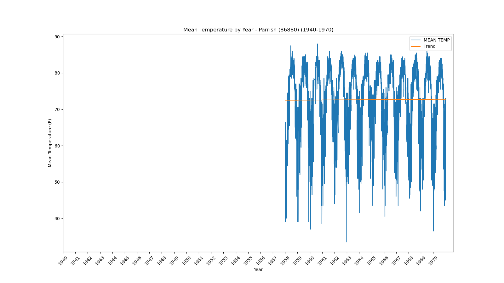</a></div>`)[0];
                popup_4cdc24298ec4e7dc81eeca7c28679ff8.setContent(html_9a96e61f9b87da70ce3ea0769b36b5a5);
            
        

        marker_18d299519cb95f6c8b802b0c2586834c.bindPopup(popup_4cdc24298ec4e7dc81eeca7c28679ff8)
        ;

        
    
    
            var marker_9454523929bab5215fc8d125019a8e9c = L.marker(
                [30.48, -87.19],
                {}
            ).addTo(map_d27828e8ee3b01b4d6c76cfca5fbf2bd);
        
    
            var icon_2ccf16a5bf65da044fbaa8045b4ab8cb = L.AwesomeMarkers.icon(
                {"extraClasses": "fa-rotate-0", "icon": "info-sign", "iconColor": "white", "markerColor": "blue", "prefix": "glyphicon"}
            );
            marker_9454523929bab5215fc8d125019a8e9c.setIcon(icon_2ccf16a5bf65da044fbaa8045b4ab8cb);
        
    
        var popup_c6fb3c1d1984bb946a04d6845a10e32b = L.popup({"maxWidth": 1000, "minWidth": 500});

        
            
                var html_3b8c5400c0db335d69950646299f52bd = $(`<div id="html_3b8c5400c0db335d69950646299f52bd" style="width: 100.0%; height: 100.0%;"><b>Pensacola Regional Airport (86997)</b><br>lat: 30.48, lon: -87.19<br><a href='../../static/img/plots/timeseries/meantemp_daily/86997_1940-1970.png' target='_BLANK'></a></div>`)[0];
                popup_c6fb3c1d1984bb946a04d6845a10e32b.setContent(html_3b8c5400c0db335d69950646299f52bd);
            
        

        marker_9454523929bab5215fc8d125019a8e9c.bindPopup(popup_c6fb3c1d1984bb946a04d6845a10e32b)
        ;

        
    
    
            var marker_5a1522776c2fdfe51ca77a8b2b8a1e0d = L.marker(
                [30.11, -83.58],
                {}
            ).addTo(map_d27828e8ee3b01b4d6c76cfca5fbf2bd);
        
    
            var icon_e7f6631b858d2bf462e9793cb11ac579 = L.AwesomeMarkers.icon(
                {"extraClasses": "fa-rotate-0", "icon": "info-sign", "iconColor": "white", "markerColor": "blue", "prefix": "glyphicon"}
            );
            marker_5a1522776c2fdfe51ca77a8b2b8a1e0d.setIcon(icon_e7f6631b858d2bf462e9793cb11ac579);
        
    
        var popup_4724ec20e836a2ae2dd1c3cf206fac81 = L.popup({"maxWidth": 1000, "minWidth": 500});

        
            
                var html_1d4c0c84ae10c72658b3aef3940fba80 = $(`<div id="html_1d4c0c84ae10c72658b3aef3940fba80" style="width: 100.0%; height: 100.0%;"><b>Perry (87025)</b><br>lat: 30.11, lon: -83.58<br><a href='../../static/img/plots/timeseries/meantemp_daily/87025_1940-1970.png' target='_BLANK'>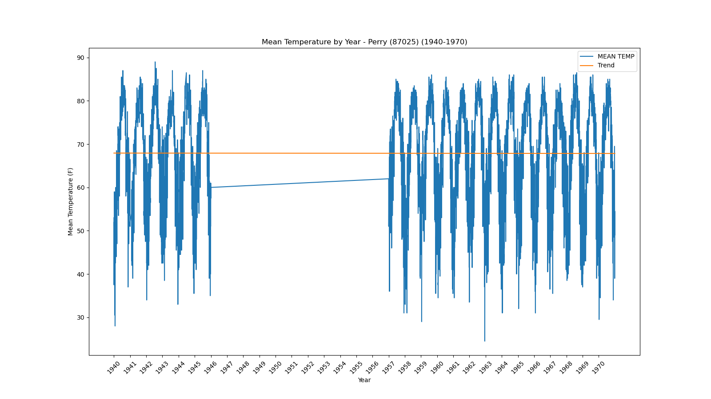</a></div>`)[0];
                popup_4724ec20e836a2ae2dd1c3cf206fac81.setContent(html_1d4c0c84ae10c72658b3aef3940fba80);
            
        

        marker_5a1522776c2fdfe51ca77a8b2b8a1e0d.bindPopup(popup_4724ec20e836a2ae2dd1c3cf206fac81)
        ;

        
    
    
            var marker_e24936da7060102384dcaed16ac3e281 = L.marker(
                [28.01, -82.16],
                {}
            ).addTo(map_d27828e8ee3b01b4d6c76cfca5fbf2bd);
        
    
            var icon_6791544c44b995d185167d2cf8dbea9b = L.AwesomeMarkers.icon(
                {"extraClasses": "fa-rotate-0", "icon": "info-sign", "iconColor": "white", "markerColor": "orange", "prefix": "glyphicon"}
            );
            marker_e24936da7060102384dcaed16ac3e281.setIcon(icon_6791544c44b995d185167d2cf8dbea9b);
        
    
        var popup_c29cfe9e7e86431cbcd7ed8299f708e9 = L.popup({"maxWidth": 1000, "minWidth": 500});

        
            
                var html_0274bf44ed5d4ae3951a422851cb300a = $(`<div id="html_0274bf44ed5d4ae3951a422851cb300a" style="width: 100.0%; height: 100.0%;"><b>Plant City (87205)</b><br>lat: 28.01, lon: -82.16<br><a href='../../static/img/plots/timeseries/meantemp_daily/87205_1940-1970.png' target='_BLANK'>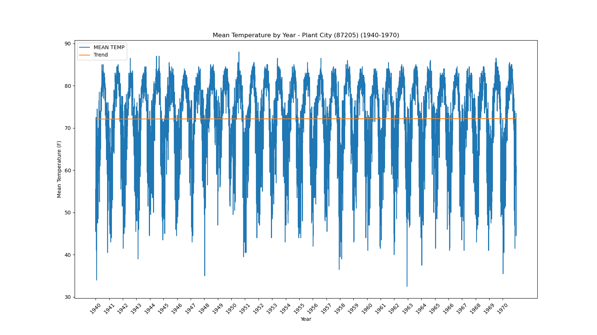</a></div>`)[0];
                popup_c29cfe9e7e86431cbcd7ed8299f708e9.setContent(html_0274bf44ed5d4ae3951a422851cb300a);
            
        

        marker_e24936da7060102384dcaed16ac3e281.bindPopup(popup_c29cfe9e7e86431cbcd7ed8299f708e9)
        ;

        
    
    
            var marker_997632bde22b21a1ae7bd921f703bfd2 = L.marker(
                [26.92, -82.0],
                {}
            ).addTo(map_d27828e8ee3b01b4d6c76cfca5fbf2bd);
        
    
            var icon_e134f14e397452ded23657f6116c88a3 = L.AwesomeMarkers.icon(
                {"extraClasses": "fa-rotate-0", "icon": "info-sign", "iconColor": "white", "markerColor": "blue", "prefix": "glyphicon"}
            );
            marker_997632bde22b21a1ae7bd921f703bfd2.setIcon(icon_e134f14e397452ded23657f6116c88a3);
        
    
        var popup_758565fbb681c75fb34fa4fbf2cd8de1 = L.popup({"maxWidth": 1000, "minWidth": 500});

        
            
                var html_e78983d39ad9c21f8a5147568a5e7b58 = $(`<div id="html_e78983d39ad9c21f8a5147568a5e7b58" style="width: 100.0%; height: 100.0%;"><b>Punta Gorda 4 ESE (87397)</b><br>lat: 26.92, lon: -82<br><a href='../../static/img/plots/timeseries/meantemp_daily/87397_1940-1970.png' target='_BLANK'></a></div>`)[0];
                popup_758565fbb681c75fb34fa4fbf2cd8de1.setContent(html_e78983d39ad9c21f8a5147568a5e7b58);
            
        

        marker_997632bde22b21a1ae7bd921f703bfd2.bindPopup(popup_758565fbb681c75fb34fa4fbf2cd8de1)
        ;

        
    
    
            var marker_033d861d24d121cdd5633c0d36e6b1b7 = L.marker(
                [30.59, -84.59],
                {}
            ).addTo(map_d27828e8ee3b01b4d6c76cfca5fbf2bd);
        
    
            var icon_d9a7ac07192a55936495028b0c8a9e83 = L.AwesomeMarkers.icon(
                {"extraClasses": "fa-rotate-0", "icon": "info-sign", "iconColor": "white", "markerColor": "orange", "prefix": "glyphicon"}
            );
            marker_033d861d24d121cdd5633c0d36e6b1b7.setIcon(icon_d9a7ac07192a55936495028b0c8a9e83);
        
    
        var popup_919b373ab24e2172e3b4c8791ff7b5b0 = L.popup({"maxWidth": 1000, "minWidth": 500});

        
            
                var html_6ff517bf2e7fa36e1b11091f1f93a969 = $(`<div id="html_6ff517bf2e7fa36e1b11091f1f93a969" style="width: 100.0%; height: 100.0%;"><b>Quincy 3 SSW (87429)</b><br>lat: 30.59, lon: -84.59<br><a href='../../static/img/plots/timeseries/meantemp_daily/87429_1940-1970.png' target='_BLANK'>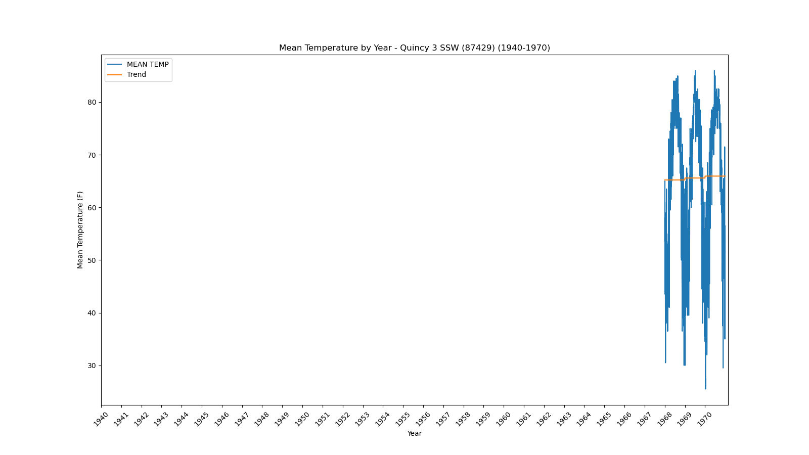</a></div>`)[0];
                popup_919b373ab24e2172e3b4c8791ff7b5b0.setContent(html_6ff517bf2e7fa36e1b11091f1f93a969);
            
        

        marker_033d861d24d121cdd5633c0d36e6b1b7.bindPopup(popup_919b373ab24e2172e3b4c8791ff7b5b0)
        ;

        
    
    
            var marker_10851c4d28aa219e28655858a69489df = L.marker(
                [25.38, -80.61],
                {}
            ).addTo(map_d27828e8ee3b01b4d6c76cfca5fbf2bd);
        
    
            var icon_96028032689456a583bfe1d1eeac379a = L.AwesomeMarkers.icon(
                {"extraClasses": "fa-rotate-0", "icon": "info-sign", "iconColor": "white", "markerColor": "orange", "prefix": "glyphicon"}
            );
            marker_10851c4d28aa219e28655858a69489df.setIcon(icon_96028032689456a583bfe1d1eeac379a);
        
    
        var popup_bd086655852e76fe1619f52295904554 = L.popup({"maxWidth": 1000, "minWidth": 500});

        
            
                var html_8c1a82edc3c6f96936c723f224fa4059 = $(`<div id="html_8c1a82edc3c6f96936c723f224fa4059" style="width: 100.0%; height: 100.0%;"><b>Royal Palm Ranger Station (87760)</b><br>lat: 25.38, lon: -80.61<br><a href='../../static/img/plots/timeseries/meantemp_daily/87760_1940-1970.png' target='_BLANK'>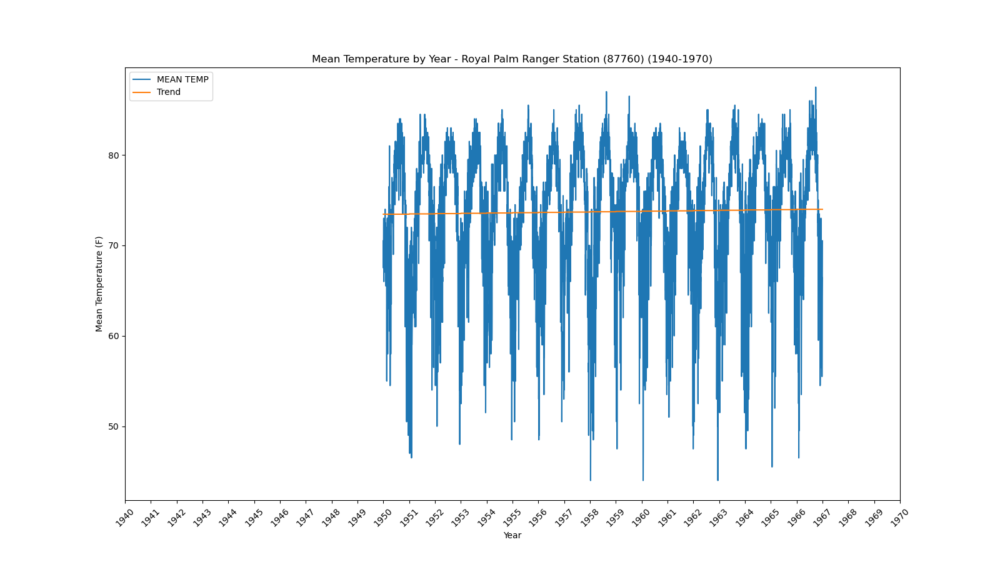</a></div>`)[0];
                popup_bd086655852e76fe1619f52295904554.setContent(html_8c1a82edc3c6f96936c723f224fa4059);
            
        

        marker_10851c4d28aa219e28655858a69489df.bindPopup(popup_bd086655852e76fe1619f52295904554)
        ;

        
    
    
            var marker_35d890909fe10441b7e53149e4bd24d9 = L.marker(
                [28.34, -82.26],
                {}
            ).addTo(map_d27828e8ee3b01b4d6c76cfca5fbf2bd);
        
    
            var icon_60697c716eeb4f021e654fc877f1ffc0 = L.AwesomeMarkers.icon(
                {"extraClasses": "fa-rotate-0", "icon": "info-sign", "iconColor": "white", "markerColor": "blue", "prefix": "glyphicon"}
            );
            marker_35d890909fe10441b7e53149e4bd24d9.setIcon(icon_60697c716eeb4f021e654fc877f1ffc0);
        
    
        var popup_609c2ab6034932eb7f2a5d0580e630eb = L.popup({"maxWidth": 1000, "minWidth": 500});

        
            
                var html_2531e0377d8d4ad047057e4d50bc72d7 = $(`<div id="html_2531e0377d8d4ad047057e4d50bc72d7" style="width: 100.0%; height: 100.0%;"><b>Sain Leo (87851)</b><br>lat: 28.34, lon: -82.26<br><a href='../../static/img/plots/timeseries/meantemp_daily/87851_1940-1970.png' target='_BLANK'>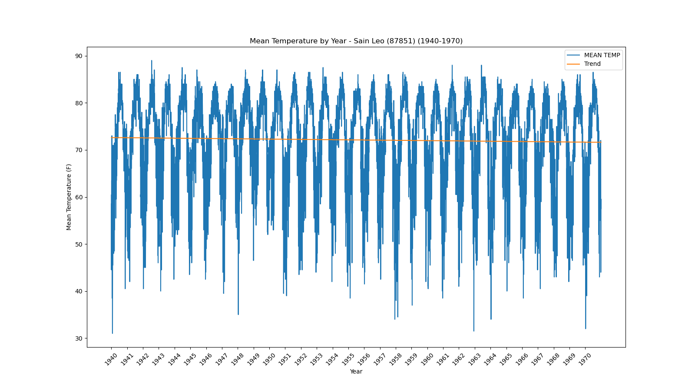</a></div>`)[0];
                popup_609c2ab6034932eb7f2a5d0580e630eb.setContent(html_2531e0377d8d4ad047057e4d50bc72d7);
            
        

        marker_35d890909fe10441b7e53149e4bd24d9.bindPopup(popup_609c2ab6034932eb7f2a5d0580e630eb)
        ;

        
    
    
            var marker_fb401649c435f9fa326dd743b0461e87 = L.marker(
                [27.91, -82.69],
                {}
            ).addTo(map_d27828e8ee3b01b4d6c76cfca5fbf2bd);
        
    
            var icon_44365af76186b6b371f22aef952ad5b7 = L.AwesomeMarkers.icon(
                {"extraClasses": "fa-rotate-0", "icon": "info-sign", "iconColor": "white", "markerColor": "blue", "prefix": "glyphicon"}
            );
            marker_fb401649c435f9fa326dd743b0461e87.setIcon(icon_44365af76186b6b371f22aef952ad5b7);
        
    
        var popup_80cf2e820973ef326d9fb38d0d336c02 = L.popup({"maxWidth": 1000, "minWidth": 500});

        
            
                var html_65928bb957850fe2fea83249bf183916 = $(`<div id="html_65928bb957850fe2fea83249bf183916" style="width: 100.0%; height: 100.0%;"><b>St. Petersburg Airport (87886)</b><br>lat: 27.91, lon: -82.69<br><a href='../../static/img/plots/timeseries/meantemp_daily/87886_1940-1970.png' target='_BLANK'></a></div>`)[0];
                popup_80cf2e820973ef326d9fb38d0d336c02.setContent(html_65928bb957850fe2fea83249bf183916);
            
        

        marker_fb401649c435f9fa326dd743b0461e87.bindPopup(popup_80cf2e820973ef326d9fb38d0d336c02)
        ;

        
    
    
            var marker_3735489c3f11c642edc5002c9a26417a = L.marker(
                [28.78, -81.24],
                {}
            ).addTo(map_d27828e8ee3b01b4d6c76cfca5fbf2bd);
        
    
            var icon_71f30fbe6de4d17da895091b510e1feb = L.AwesomeMarkers.icon(
                {"extraClasses": "fa-rotate-0", "icon": "info-sign", "iconColor": "white", "markerColor": "blue", "prefix": "glyphicon"}
            );
            marker_3735489c3f11c642edc5002c9a26417a.setIcon(icon_71f30fbe6de4d17da895091b510e1feb);
        
    
        var popup_81a16a293f262f6435a8dddb6b20e7bc = L.popup({"maxWidth": 1000, "minWidth": 500});

        
            
                var html_689283f9b9f922d99fcfa317d3559f1d = $(`<div id="html_689283f9b9f922d99fcfa317d3559f1d" style="width: 100.0%; height: 100.0%;"><b>Sanford (87982)</b><br>lat: 28.78, lon: -81.24<br><a href='../../static/img/plots/timeseries/meantemp_daily/87982_1940-1970.png' target='_BLANK'>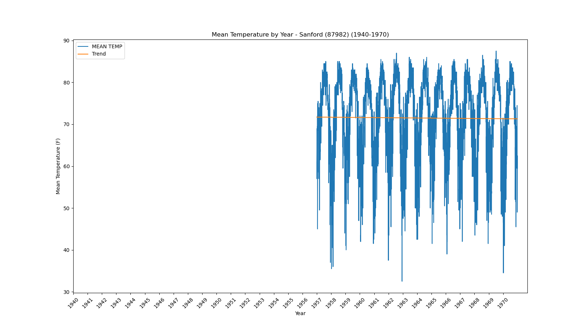</a></div>`)[0];
                popup_81a16a293f262f6435a8dddb6b20e7bc.setContent(html_689283f9b9f922d99fcfa317d3559f1d);
            
        

        marker_3735489c3f11c642edc5002c9a26417a.bindPopup(popup_81a16a293f262f6435a8dddb6b20e7bc)
        ;

        
    
    
            var marker_f9c4b687e17829916e7993b6230dd008 = L.marker(
                [27.2, -80.25],
                {}
            ).addTo(map_d27828e8ee3b01b4d6c76cfca5fbf2bd);
        
    
            var icon_b17edd30efcbbe32a28f9fd312349bb1 = L.AwesomeMarkers.icon(
                {"extraClasses": "fa-rotate-0", "icon": "info-sign", "iconColor": "white", "markerColor": "blue", "prefix": "glyphicon"}
            );
            marker_f9c4b687e17829916e7993b6230dd008.setIcon(icon_b17edd30efcbbe32a28f9fd312349bb1);
        
    
        var popup_e51eb998418bf27e1684188942fba8fb = L.popup({"maxWidth": 1000, "minWidth": 500});

        
            
                var html_57ad86e6307f09fc0d253614abff7b1b = $(`<div id="html_57ad86e6307f09fc0d253614abff7b1b" style="width: 100.0%; height: 100.0%;"><b>Stuart (88620)</b><br>lat: 27.2, lon: -80.25<br><a href='../../static/img/plots/timeseries/meantemp_daily/88620_1940-1970.png' target='_BLANK'></a></div>`)[0];
                popup_e51eb998418bf27e1684188942fba8fb.setContent(html_57ad86e6307f09fc0d253614abff7b1b);
            
        

        marker_f9c4b687e17829916e7993b6230dd008.bindPopup(popup_e51eb998418bf27e1684188942fba8fb)
        ;

        
    
    
            var marker_951df508bf4c98e47061098f6befd4e7 = L.marker(
                [30.39, -84.35],
                {}
            ).addTo(map_d27828e8ee3b01b4d6c76cfca5fbf2bd);
        
    
            var icon_4fe3336517ab946deb13a4ae85193cc8 = L.AwesomeMarkers.icon(
                {"extraClasses": "fa-rotate-0", "icon": "info-sign", "iconColor": "white", "markerColor": "blue", "prefix": "glyphicon"}
            );
            marker_951df508bf4c98e47061098f6befd4e7.setIcon(icon_4fe3336517ab946deb13a4ae85193cc8);
        
    
        var popup_5263377fe8b59ef0bf6d2f2e65297cab = L.popup({"maxWidth": 1000, "minWidth": 500});

        
            
                var html_55f8fb3d5dbeb0da64cc35a1654e805e = $(`<div id="html_55f8fb3d5dbeb0da64cc35a1654e805e" style="width: 100.0%; height: 100.0%;"><b>Tallahassee Regional Airport (88758)</b><br>lat: 30.39, lon: -84.35<br><a href='../../static/img/plots/timeseries/meantemp_daily/88758_1940-1970.png' target='_BLANK'></a></div>`)[0];
                popup_5263377fe8b59ef0bf6d2f2e65297cab.setContent(html_55f8fb3d5dbeb0da64cc35a1654e805e);
            
        

        marker_951df508bf4c98e47061098f6befd4e7.bindPopup(popup_5263377fe8b59ef0bf6d2f2e65297cab)
        ;

        
    
    
            var marker_59f8af390d493a2c35013400b3456233 = L.marker(
                [27.98, -82.53],
                {}
            ).addTo(map_d27828e8ee3b01b4d6c76cfca5fbf2bd);
        
    
            var icon_d9ba85da2fa314bc6448465e7d7d0fc4 = L.AwesomeMarkers.icon(
                {"extraClasses": "fa-rotate-0", "icon": "info-sign", "iconColor": "white", "markerColor": "blue", "prefix": "glyphicon"}
            );
            marker_59f8af390d493a2c35013400b3456233.setIcon(icon_d9ba85da2fa314bc6448465e7d7d0fc4);
        
    
        var popup_e813d0e5643b5407fe42b5b0ef2f7ef8 = L.popup({"maxWidth": 1000, "minWidth": 500});

        
            
                var html_86d56b9567c5e7d3ce356044cbed06d9 = $(`<div id="html_86d56b9567c5e7d3ce356044cbed06d9" style="width: 100.0%; height: 100.0%;"><b>Tampa Intl Airport (88788)</b><br>lat: 27.98, lon: -82.53<br><a href='../../static/img/plots/timeseries/meantemp_daily/88788_1940-1970.png' target='_BLANK'>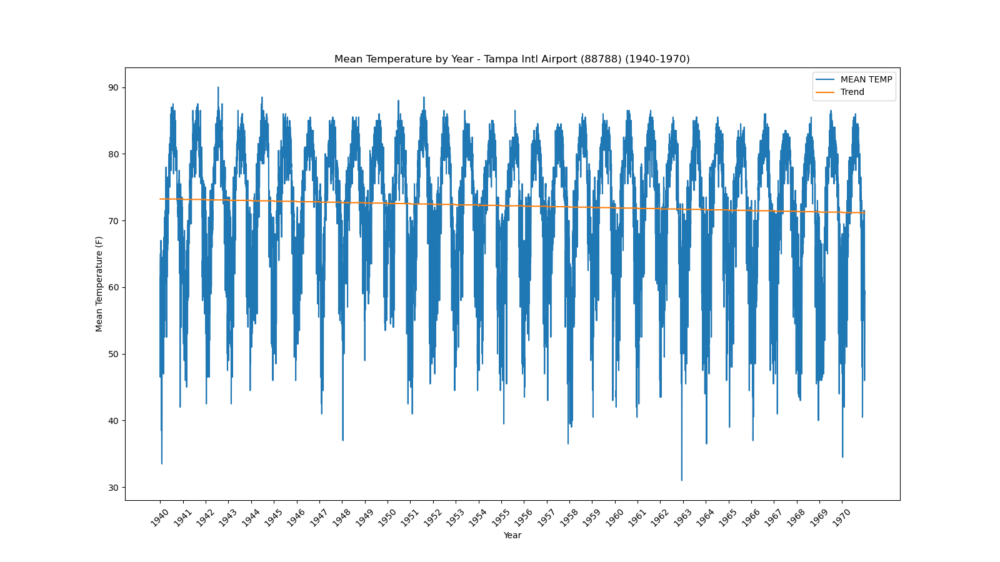</a></div>`)[0];
                popup_e813d0e5643b5407fe42b5b0ef2f7ef8.setContent(html_86d56b9567c5e7d3ce356044cbed06d9);
            
        

        marker_59f8af390d493a2c35013400b3456233.bindPopup(popup_e813d0e5643b5407fe42b5b0ef2f7ef8)
        ;

        
    
    
            var marker_c31d33df18349c0806506281f7464985 = L.marker(
                [28.15, -82.75],
                {}
            ).addTo(map_d27828e8ee3b01b4d6c76cfca5fbf2bd);
        
    
            var icon_ee4d98f428db370926a9c60dee4319ad = L.AwesomeMarkers.icon(
                {"extraClasses": "fa-rotate-0", "icon": "info-sign", "iconColor": "white", "markerColor": "blue", "prefix": "glyphicon"}
            );
            marker_c31d33df18349c0806506281f7464985.setIcon(icon_ee4d98f428db370926a9c60dee4319ad);
        
    
        var popup_9ed95adf57b13f1ff8b0f20a78851648 = L.popup({"maxWidth": 1000, "minWidth": 500});

        
            
                var html_d4a06d392e2c68b11003694a62a27bb3 = $(`<div id="html_d4a06d392e2c68b11003694a62a27bb3" style="width: 100.0%; height: 100.0%;"><b>Tarpon Springs Sewage Plant (88824)</b><br>lat: 28.15, lon: -82.75<br><a href='../../static/img/plots/timeseries/meantemp_daily/88824_1940-1970.png' target='_BLANK'>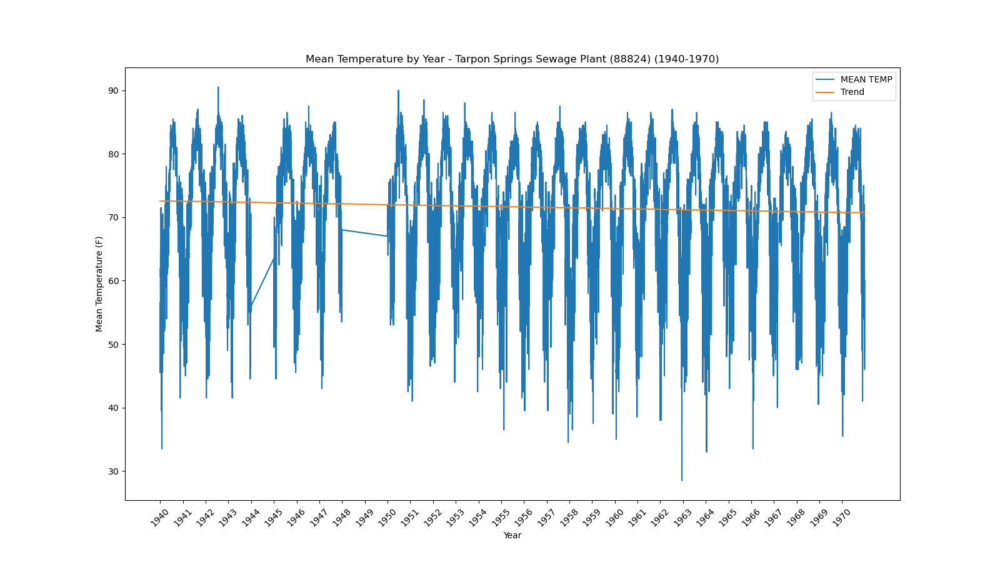</a></div>`)[0];
                popup_9ed95adf57b13f1ff8b0f20a78851648.setContent(html_d4a06d392e2c68b11003694a62a27bb3);
            
        

        marker_c31d33df18349c0806506281f7464985.bindPopup(popup_9ed95adf57b13f1ff8b0f20a78851648)
        ;

        
    
    
            var marker_1c2f719d169fa0c005fa3f8ce01c79c8 = L.marker(
                [28.61, -80.82],
                {}
            ).addTo(map_d27828e8ee3b01b4d6c76cfca5fbf2bd);
        
    
            var icon_a97661d7c15d46cf4b886efb317e0b4c = L.AwesomeMarkers.icon(
                {"extraClasses": "fa-rotate-0", "icon": "info-sign", "iconColor": "white", "markerColor": "blue", "prefix": "glyphicon"}
            );
            marker_1c2f719d169fa0c005fa3f8ce01c79c8.setIcon(icon_a97661d7c15d46cf4b886efb317e0b4c);
        
    
        var popup_041de29329bc885f0e664ecd0f949963 = L.popup({"maxWidth": 1000, "minWidth": 500});

        
            
                var html_b1c10e66e700098a3996fc6fdda6634f = $(`<div id="html_b1c10e66e700098a3996fc6fdda6634f" style="width: 100.0%; height: 100.0%;"><b>Titusville (88942)</b><br>lat: 28.61, lon: -80.82<br><a href='../../static/img/plots/timeseries/meantemp_daily/88942_1940-1970.png' target='_BLANK'>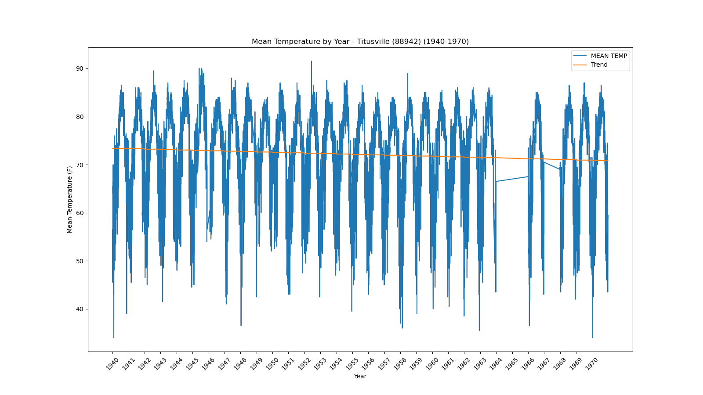</a></div>`)[0];
                popup_041de29329bc885f0e664ecd0f949963.setContent(html_b1c10e66e700098a3996fc6fdda6634f);
            
        

        marker_1c2f719d169fa0c005fa3f8ce01c79c8.bindPopup(popup_041de29329bc885f0e664ecd0f949963)
        ;

        
    
    
            var marker_19a60d2c2d762e00fd2edb77a0dca2bf = L.marker(
                [29.41, -82.82],
                {}
            ).addTo(map_d27828e8ee3b01b4d6c76cfca5fbf2bd);
        
    
            var icon_24ed4e3a3cde80e95c47ede64ba8af82 = L.AwesomeMarkers.icon(
                {"extraClasses": "fa-rotate-0", "icon": "info-sign", "iconColor": "white", "markerColor": "blue", "prefix": "glyphicon"}
            );
            marker_19a60d2c2d762e00fd2edb77a0dca2bf.setIcon(icon_24ed4e3a3cde80e95c47ede64ba8af82);
        
    
        var popup_0bed35be013e35b3f141a7d466bfecf3 = L.popup({"maxWidth": 1000, "minWidth": 500});

        
            
                var html_b80a482b120e9bc33a1d9e6ffb8dd5f5 = $(`<div id="html_b80a482b120e9bc33a1d9e6ffb8dd5f5" style="width: 100.0%; height: 100.0%;"><b>Usher Lookout Tower (89120)</b><br>lat: 29.41, lon: -82.82<br><a href='../../static/img/plots/timeseries/meantemp_daily/89120_1940-1970.png' target='_BLANK'>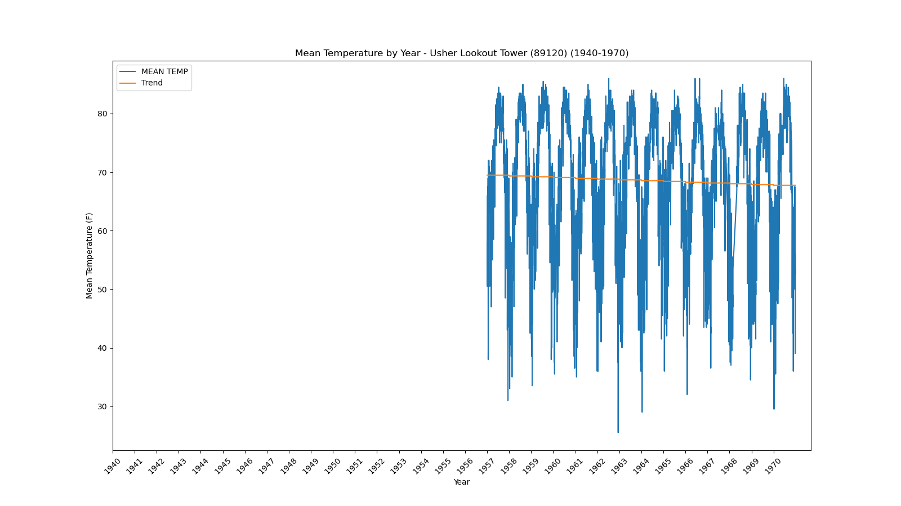</a></div>`)[0];
                popup_0bed35be013e35b3f141a7d466bfecf3.setContent(html_b80a482b120e9bc33a1d9e6ffb8dd5f5);
            
        

        marker_19a60d2c2d762e00fd2edb77a0dca2bf.bindPopup(popup_0bed35be013e35b3f141a7d466bfecf3)
        ;

        
    
    
            var marker_086c1742aacda172f1c56442daff640c = L.marker(
                [27.1, -82.43],
                {}
            ).addTo(map_d27828e8ee3b01b4d6c76cfca5fbf2bd);
        
    
            var icon_7fabe700e35d6c4176c7e27207de3592 = L.AwesomeMarkers.icon(
                {"extraClasses": "fa-rotate-0", "icon": "info-sign", "iconColor": "white", "markerColor": "blue", "prefix": "glyphicon"}
            );
            marker_086c1742aacda172f1c56442daff640c.setIcon(icon_7fabe700e35d6c4176c7e27207de3592);
        
    
        var popup_a8ea9f55cc6e8ffb22b08f91a177e878 = L.popup({"maxWidth": 1000, "minWidth": 500});

        
            
                var html_d0503bdd42bc8bb3fe89a42825abab47 = $(`<div id="html_d0503bdd42bc8bb3fe89a42825abab47" style="width: 100.0%; height: 100.0%;"><b>Venice (89176)</b><br>lat: 27.1, lon: -82.43<br><a href='../../static/img/plots/timeseries/meantemp_daily/89176_1940-1970.png' target='_BLANK'></a></div>`)[0];
                popup_a8ea9f55cc6e8ffb22b08f91a177e878.setContent(html_d0503bdd42bc8bb3fe89a42825abab47);
            
        

        marker_086c1742aacda172f1c56442daff640c.bindPopup(popup_a8ea9f55cc6e8ffb22b08f91a177e878)
        ;

        
    
    
            var marker_d1168999174fa6811fcc15f515b93cdc = L.marker(
                [27.65, -80.42],
                {}
            ).addTo(map_d27828e8ee3b01b4d6c76cfca5fbf2bd);
        
    
            var icon_cc6305da08fd99afd7c196d2aa4be7a9 = L.AwesomeMarkers.icon(
                {"extraClasses": "fa-rotate-0", "icon": "info-sign", "iconColor": "white", "markerColor": "blue", "prefix": "glyphicon"}
            );
            marker_d1168999174fa6811fcc15f515b93cdc.setIcon(icon_cc6305da08fd99afd7c196d2aa4be7a9);
        
    
        var popup_aca3ff382adde4d375a23deed51fcac7 = L.popup({"maxWidth": 1000, "minWidth": 500});

        
            
                var html_a6eb81c93213a25a0266c8027574dab4 = $(`<div id="html_a6eb81c93213a25a0266c8027574dab4" style="width: 100.0%; height: 100.0%;"><b>Vero Beach Intl Airport (89214)</b><br>lat: 27.65, lon: -80.42<br><a href='../../static/img/plots/timeseries/meantemp_daily/89214_1940-1970.png' target='_BLANK'></a></div>`)[0];
                popup_aca3ff382adde4d375a23deed51fcac7.setContent(html_a6eb81c93213a25a0266c8027574dab4);
            
        

        marker_d1168999174fa6811fcc15f515b93cdc.bindPopup(popup_aca3ff382adde4d375a23deed51fcac7)
        ;

        
    
    
            var marker_eaba689c171919ff49c11c62ff358136 = L.marker(
                [27.66, -80.37],
                {}
            ).addTo(map_d27828e8ee3b01b4d6c76cfca5fbf2bd);
        
    
            var icon_192639ed4e00dd519ad418f4df40eb81 = L.AwesomeMarkers.icon(
                {"extraClasses": "fa-rotate-0", "icon": "info-sign", "iconColor": "white", "markerColor": "blue", "prefix": "glyphicon"}
            );
            marker_eaba689c171919ff49c11c62ff358136.setIcon(icon_192639ed4e00dd519ad418f4df40eb81);
        
    
        var popup_66540388396184d88d1c8aa030eb1366 = L.popup({"maxWidth": 1000, "minWidth": 500});

        
            
                var html_fd1044e7561cfa43cb5028551be95abb = $(`<div id="html_fd1044e7561cfa43cb5028551be95abb" style="width: 100.0%; height: 100.0%;"><b>Vero Beach 4 SE (89219)</b><br>lat: 27.66, lon: -80.37<br><a href='../../static/img/plots/timeseries/meantemp_daily/89219_1940-1970.png' target='_BLANK'></a></div>`)[0];
                popup_66540388396184d88d1c8aa030eb1366.setContent(html_fd1044e7561cfa43cb5028551be95abb);
            
        

        marker_eaba689c171919ff49c11c62ff358136.bindPopup(popup_66540388396184d88d1c8aa030eb1366)
        ;

        
    
    
            var marker_cc568f0debbcc00e82965b353d17a0d4 = L.marker(
                [27.51, -81.89],
                {}
            ).addTo(map_d27828e8ee3b01b4d6c76cfca5fbf2bd);
        
    
            var icon_63ac306f550e4ede843450de386a778e = L.AwesomeMarkers.icon(
                {"extraClasses": "fa-rotate-0", "icon": "info-sign", "iconColor": "white", "markerColor": "blue", "prefix": "glyphicon"}
            );
            marker_cc568f0debbcc00e82965b353d17a0d4.setIcon(icon_63ac306f550e4ede843450de386a778e);
        
    
        var popup_7fbf966a334b24aebc17235ebe68797d = L.popup({"maxWidth": 1000, "minWidth": 500});

        
            
                var html_ff59b3d0e12230d4b1c65bd415056a8b = $(`<div id="html_ff59b3d0e12230d4b1c65bd415056a8b" style="width: 100.0%; height: 100.0%;"><b>Wauchula (89401)</b><br>lat: 27.51, lon: -81.89<br><a href='../../static/img/plots/timeseries/meantemp_daily/89401_1940-1970.png' target='_BLANK'></a></div>`)[0];
                popup_7fbf966a334b24aebc17235ebe68797d.setContent(html_ff59b3d0e12230d4b1c65bd415056a8b);
            
        

        marker_cc568f0debbcc00e82965b353d17a0d4.bindPopup(popup_7fbf966a334b24aebc17235ebe68797d)
        ;

        
    
    
            var marker_e30875da99c167576035d701daf0448d = L.marker(
                [28.53, -82.58],
                {}
            ).addTo(map_d27828e8ee3b01b4d6c76cfca5fbf2bd);
        
    
            var icon_32ffab7b35d0b58f463e857494d1458f = L.AwesomeMarkers.icon(
                {"extraClasses": "fa-rotate-0", "icon": "info-sign", "iconColor": "white", "markerColor": "orange", "prefix": "glyphicon"}
            );
            marker_e30875da99c167576035d701daf0448d.setIcon(icon_32ffab7b35d0b58f463e857494d1458f);
        
    
        var popup_c03aa5f4826ff46aba6813b509865afa = L.popup({"maxWidth": 1000, "minWidth": 500});

        
            
                var html_143e42b6e81f4b2e12b4178e7900bc5d = $(`<div id="html_143e42b6e81f4b2e12b4178e7900bc5d" style="width: 100.0%; height: 100.0%;"><b>Weeki Wachee (89430)</b><br>lat: 28.53, lon: -82.58<br><a href='../../static/img/plots/timeseries/meantemp_daily/89430_1940-1970.png' target='_BLANK'>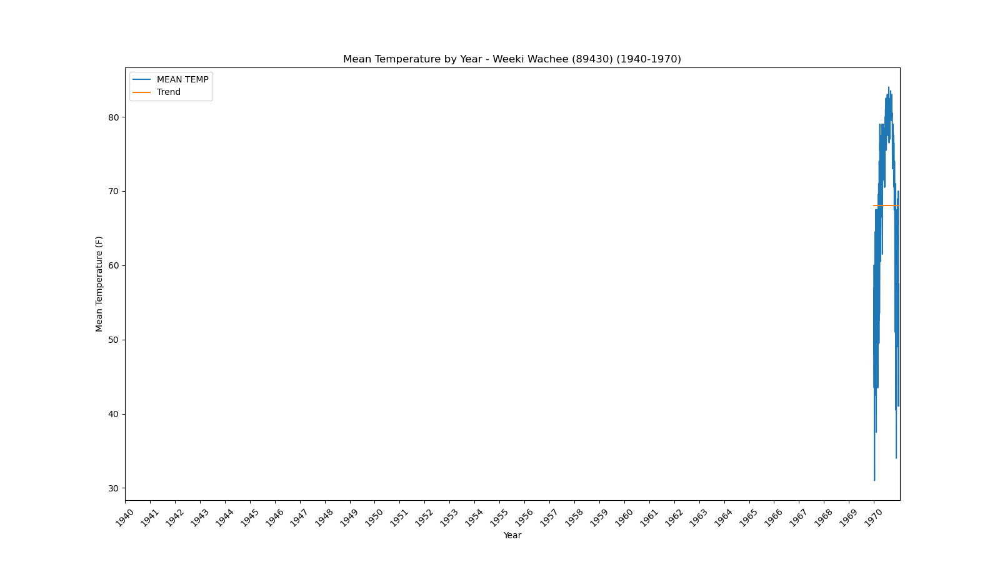</a></div>`)[0];
                popup_c03aa5f4826ff46aba6813b509865afa.setContent(html_143e42b6e81f4b2e12b4178e7900bc5d);
            
        

        marker_e30875da99c167576035d701daf0448d.bindPopup(popup_c03aa5f4826ff46aba6813b509865afa)
        ;

        
    
    
            var marker_2e1b41258f30cc89b88468352c2158cb = L.marker(
                [26.69, -80.09],
                {}
            ).addTo(map_d27828e8ee3b01b4d6c76cfca5fbf2bd);
        
    
            var icon_24659320a1d7568de6575c0c26eadac8 = L.AwesomeMarkers.icon(
                {"extraClasses": "fa-rotate-0", "icon": "info-sign", "iconColor": "white", "markerColor": "blue", "prefix": "glyphicon"}
            );
            marker_2e1b41258f30cc89b88468352c2158cb.setIcon(icon_24659320a1d7568de6575c0c26eadac8);
        
    
        var popup_3a33356da3a8bba4a190648f99da20f1 = L.popup({"maxWidth": 1000, "minWidth": 500});

        
            
                var html_b38fce75c10180823fcfbe7c872b89c4 = $(`<div id="html_b38fce75c10180823fcfbe7c872b89c4" style="width: 100.0%; height: 100.0%;"><b>West Palm Beach Intl Airport (89525)</b><br>lat: 26.69, lon: -80.09<br><a href='../../static/img/plots/timeseries/meantemp_daily/89525_1940-1970.png' target='_BLANK'></a></div>`)[0];
                popup_3a33356da3a8bba4a190648f99da20f1.setContent(html_b38fce75c10180823fcfbe7c872b89c4);
            
        

        marker_2e1b41258f30cc89b88468352c2158cb.bindPopup(popup_3a33356da3a8bba4a190648f99da20f1)
        ;

        
    
    
            var marker_5d50e4665f28701b22c22e6156cce190 = L.marker(
                [30.11, -85.2],
                {}
            ).addTo(map_d27828e8ee3b01b4d6c76cfca5fbf2bd);
        
    
            var icon_62a896e7c86371cd1c9cbb97ec89827d = L.AwesomeMarkers.icon(
                {"extraClasses": "fa-rotate-0", "icon": "info-sign", "iconColor": "white", "markerColor": "blue", "prefix": "glyphicon"}
            );
            marker_5d50e4665f28701b22c22e6156cce190.setIcon(icon_62a896e7c86371cd1c9cbb97ec89827d);
        
    
        var popup_33a904f914212185d5e6d31e94f1377a = L.popup({"maxWidth": 1000, "minWidth": 500});

        
            
                var html_0106a002d4fa2b87617a81f52aa09df1 = $(`<div id="html_0106a002d4fa2b87617a81f52aa09df1" style="width: 100.0%; height: 100.0%;"><b>Wewahitchka (89566)</b><br>lat: 30.11, lon: -85.2<br><a href='../../static/img/plots/timeseries/meantemp_daily/89566_1940-1970.png' target='_BLANK'></a></div>`)[0];
                popup_33a904f914212185d5e6d31e94f1377a.setContent(html_0106a002d4fa2b87617a81f52aa09df1);
            
        

        marker_5d50e4665f28701b22c22e6156cce190.bindPopup(popup_33a904f914212185d5e6d31e94f1377a)
        ;

        
    
</script>
</html>